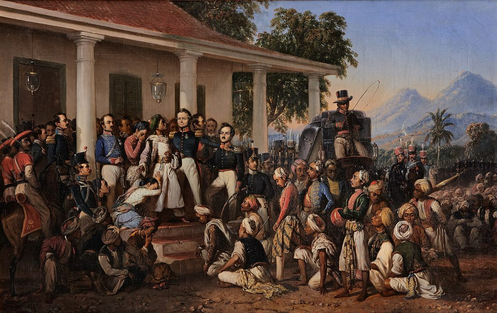
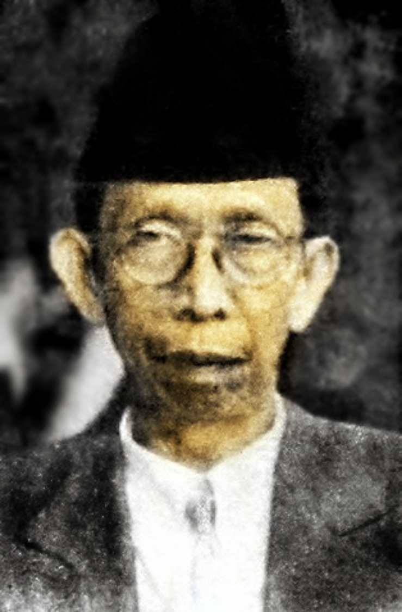
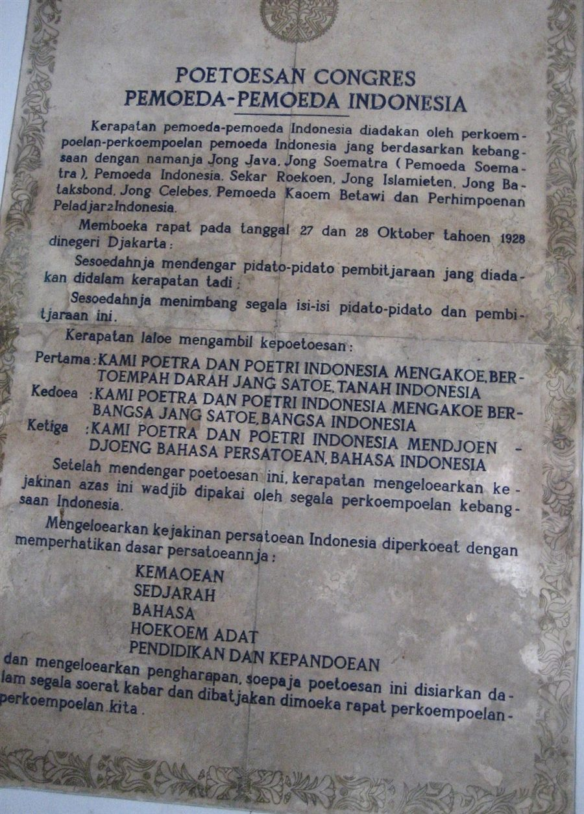
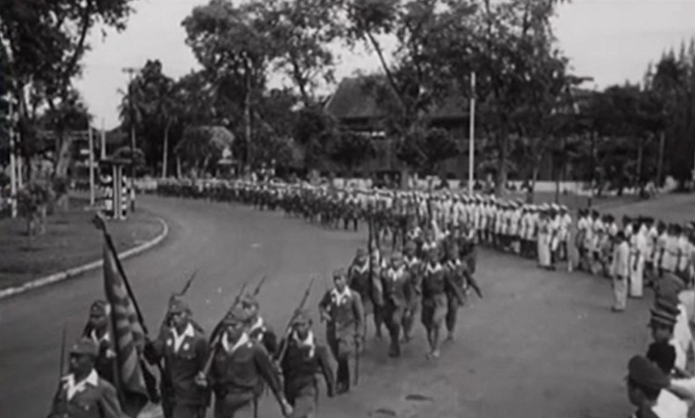
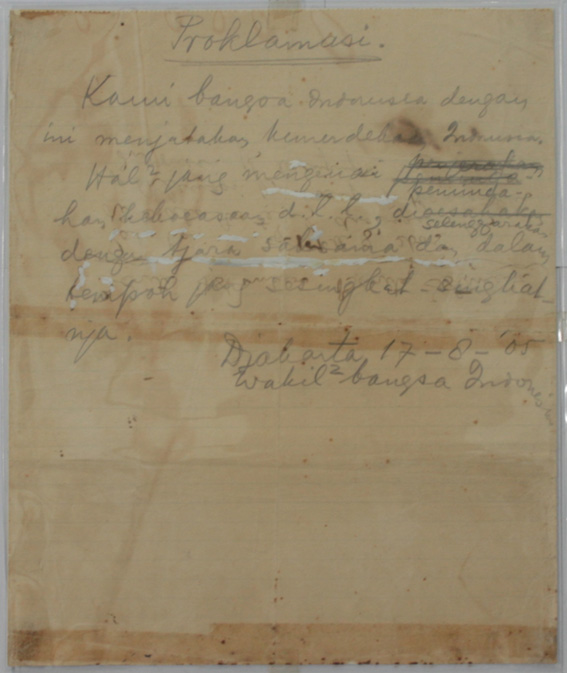
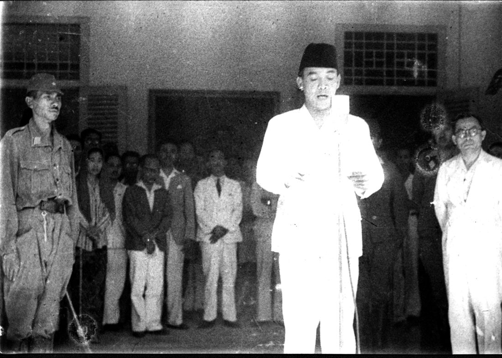
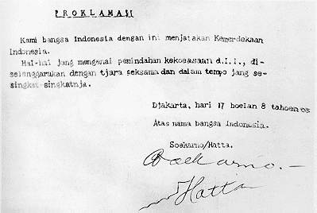
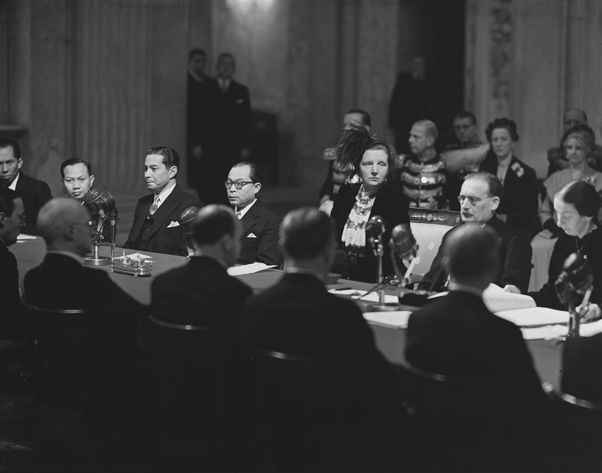
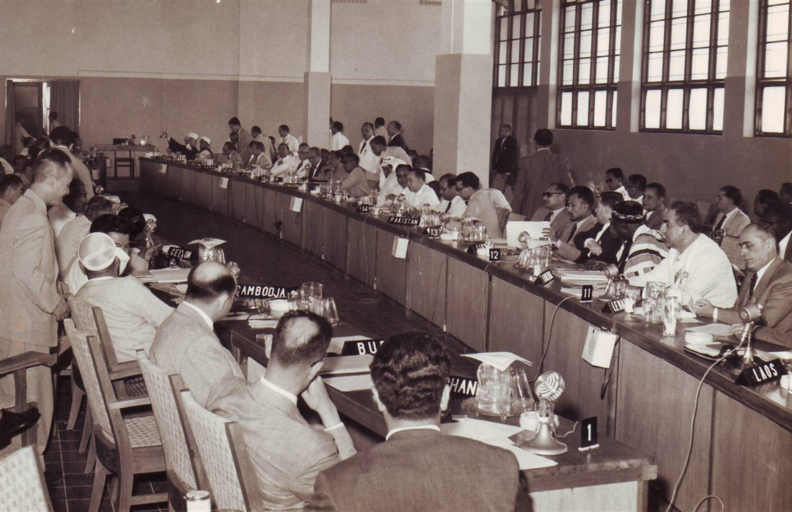
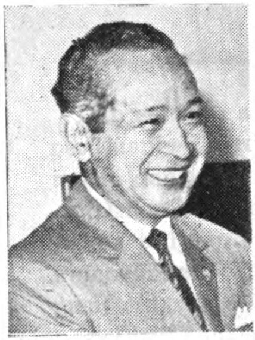

Kedatangan bangsa Eropa ke Nusantara bermula dari perburuan rempah-rempah. Portugis tiba lebih dahulu di awal abad ke-16 dan menguasai Malaka (1511), disusul Spanyol, lalu Belanda melalui VOC (Vereenigde Oostindische Compagnie) yang didirikan tahun 1602 sebagai kongsi dagang dengan hak istimewa dari pemerintah Belanda: hak memonopoli perdagangan, hak mencetak uang, hak mengangkat pegawai, bahkan hak menyatakan perang dan membuat perjanjian dengan penguasa lokal (hak oktroi). VOC inilah yang secara bertahap mengubah dirinya dari kongsi dagang menjadi kekuatan kolonial yang menguasai wilayah demi wilayah di Nusantara, sering dengan politik devide et impera (memecah belah dan menguasai) — mengadu domba kerajaan-kerajaan lokal, memanfaatkan konflik suksesi, dan mengikat penguasa setempat lewat perjanjian yang timpang.
Perlawanan terhadap kekuasaan asing ini muncul di hampir seluruh penjuru Nusantara, namun sifatnya masih lokal dan kedaerahan: masing-masing dipimpin oleh raja, sultan, atau bangsawan setempat, mengandalkan pasukan dan senjata tradisional, dan umumnya dipicu oleh sebab-sebab yang bersifat langsung — monopoli dagang yang merugikan, campur tangan dalam suksesi kerajaan, pemungutan pajak yang memberatkan, atau pelanggaran terhadap adat dan agama setempat. Karena tidak terkoordinasi antarwilayah dan tidak memiliki visi persatuan sebagai satu bangsa, perlawanan-perlawanan ini pada akhirnya dapat dipatahkan Belanda satu per satu, meski sering setelah pertempuran yang berlangsung sangat lama dan menelan biaya besar bagi pihak kolonial.
Berikut tokoh-tokoh perlawanan kedaerahan yang paling sering muncul dalam materi sejarah nasional, lengkap dengan konteks perjuangannya masing-masing:

Penangkapan Pangeran Diponegoro, 1830
Lukisan karya Raden Saleh (1857) — menggambarkan perundingan di Magelang yang berujung pada penangkapan Diponegoro.
Sumber: Wikimedia Commons · domain publik (karya seni lama)
Pattimura (Thomas Matulessy) Memimpin perlawanan rakyat Maluku pada tahun 1817, dipicu oleh kembalinya kekuasaan Belanda atas Maluku setelah sebelumnya dikuasai Inggris (1811–1816) dengan sistem yang lebih longgar. Rakyat Maluku yang sudah merasakan kebijakan Inggris yang lebih ringan, menolak kembalinya monopoli dan kerja paksa Belanda. Pattimura berhasil merebut benteng Duurstede di Saparua, namun akhirnya ditangkap dan dihukum gantung di Ambon.
Sultan Hasanuddin Penguasa Kesultanan Gowa (Makassar) yang menentang keras upaya VOC memonopoli perdagangan rempah di kawasan timur Nusantara. Perlawanannya berakhir dengan Perjanjian Bongaya (1667) yang sangat merugikan Gowa, memaksa Hasanuddin menyerahkan wilayah dan hak dagangnya. Karena keberaniannya, Belanda menjulukinya "De Haantjes van het Oosten" (Ayam Jantan dari Timur).
Sultan Agung Raja terbesar Kesultanan Mataram Islam (memerintah 1613–1645), berambisi menyatukan seluruh Jawa dan mengusir VOC dari Batavia. Dua kali mengirim ekspedisi besar menyerang Batavia (1628 dan 1629), namun keduanya gagal, salah satunya karena lumbung-lumbung padi pasukan Mataram di Cirebon dan Tegal dibakar habis oleh VOC sehingga pasukan kehabisan logistik.
Tuanku Imam Bonjol Tokoh utama dalam Perang Padri (1803–1837) di Sumatra Barat. Perang ini bermula sebagai konflik internal antara kaum Padri (ulama pembaru yang ingin menegakkan syariat Islam secara ketat) melawan kaum Adat, namun sejak Belanda ikut campur membantu kaum Adat, perang ini berubah arah menjadi perlawanan bersama rakyat Minangkabau melawan kolonial Belanda.
Pangeran Diponegoro Memimpin Perang Jawa atau Perang Diponegoro (1825–1830), perang terbesar dan paling menguras kas pemerintah kolonial di seluruh sejarah Hindia Belanda. Perang ini dipicu oleh pemasangan patok jalan yang melintasi tanah makam leluhur Diponegoro di Tegalrejo tanpa izin, yang menjadi puncak kekecewaan atas berbagai kebijakan Belanda yang menyengsarakan rakyat dan bangsawan Jawa. Diponegoro akhirnya ditangkap secara licik saat perundingan di Magelang dan diasingkan ke Makassar.
Cut Nyak Dien & Teuku Umar Dua tokoh utama Perang Aceh (1873–1904), perang kolonial terpanjang dan termahal yang pernah dihadapi Belanda. Teuku Umar sempat menggunakan taktik pura-pura menyerah untuk mendapatkan senjata dari Belanda sebelum kembali menyerang. Setelah Teuku Umar gugur, istrinya Cut Nyak Dien melanjutkan perlawanan gerilya hingga ditangkap dan diasingkan ke Sumedang, Jawa Barat.
Sisingamangaraja XII Raja sekaligus pemimpin spiritual masyarakat Batak yang memimpin perlawanan terhadap perluasan kekuasaan Belanda ke wilayah Tapanuli. Perlawanannya berlangsung bertahun-tahun dalam bentuk gerilya di pegunungan, hingga akhirnya gugur dalam pertempuran tahun 1907.
Pangeran Antasari Memimpin Perang Banjar (1859–1905) di Kalimantan Selatan, yang dipicu campur tangan Belanda dalam urusan suksesi Kesultanan Banjar serta eksploitasi tambang batu bara dan intan di wilayah tersebut. Perang ini termasuk salah satu perlawanan rakyat terlama melawan kolonial.
I Gusti Ketut Jelantik Patih Kerajaan Buleleng, Bali, yang menolak menghapuskan hukum tawan karang (hukum adat yang memberi hak kepada kerajaan Bali untuk menyita kapal asing yang kandas di perairannya). Penolakan ini memicu Perang Bali (Puputan Buleleng) melawan ekspedisi militer Belanda pada pertengahan abad ke-19.
Pola umum yang penting dipahami: hampir semua perlawanan pada periode ini berakhir dengan kekalahan pihak pribumi, baik melalui penaklukan militer langsung, penangkapan tokoh melalui tipu daya perundingan, maupun perjanjian yang secara bertahap melucuti kedaulatan kerajaan lokal. Pengalaman kekalahan yang berulang inilah yang kemudian, pada awal abad ke-20, mendorong generasi baru pemikir pribumi untuk mencari strategi perjuangan yang sama sekali berbeda: bukan lagi mengandalkan kekuatan senjata satu daerah, melainkan organisasi modern yang mempersatukan seluruh Nusantara.
Sepanjang abad ke-19, Belanda menerapkan sistem eksploitasi ekonomi yang sangat menekan rakyat pribumi, terutama melalui Sistem Tanam Paksa (Cultuurstelsel) yang diberlakukan Gubernur Jenderal Johannes van den Bosch sejak 1830. Sistem ini mewajibkan petani menanami sebagian lahan mereka dengan tanaman ekspor (kopi, tebu, nila/indigo) untuk diserahkan kepada pemerintah kolonial, yang menghasilkan keuntungan sangat besar bagi kas Belanda namun menyengsarakan rakyat karena mengurangi lahan untuk tanaman pangan dan sering disertai kerja paksa yang berlebihan.
Eksploitasi ini lambat laun menuai kritik, termasuk dari kalangan Belanda sendiri yang berpandangan liberal dan humanis. Kritik paling terkenal datang dari Eduard Douwes Dekker (menulis dengan nama pena Multatuli) lewat novel Max Havelaar (1860) yang mengungkap penderitaan rakyat akibat Tanam Paksa, serta dari Conrad Theodore van Deventer yang menulis esai berjudul "Een Eereschuld" (Utang Kehormatan) pada tahun 1899, yang berargumen bahwa Belanda telah meraup kekayaan luar biasa dari Hindia Belanda dan karenanya berutang budi untuk mengembalikannya dalam bentuk kesejahteraan bagi rakyat pribumi.
Dari desakan inilah lahir Politik Etis (Politik Balas Budi) yang mulai dijalankan pemerintah kolonial pada tahun 1901, dengan tiga program utama yang dikenal sebagai Trias Politika Etis:
Irigasi — pembangunan dan perbaikan sistem pengairan pertanian, dimaksudkan meningkatkan produktivitas lahan rakyat.
Edukasi — pendirian sekolah-sekolah bagi penduduk pribumi, mulai dari sekolah dasar (Sekolah Rakyat) hingga sekolah tinggi kejuruan seperti STOVIA (sekolah kedokteran), meski pada praktiknya akses pendidikan ini masih sangat terbatas dan diprioritaskan bagi kalangan bangsawan/priyayi serta anak pegawai kolonial.
Emigrasi (Transmigrasi) — pemindahan penduduk dari Jawa yang padat ke wilayah luar Jawa yang masih jarang penduduknya, seperti Sumatra.
Ironisnya, program yang dimaksudkan Belanda untuk memperkuat legitimasi kolonial justru menjadi bumerang. Pendidikan Barat yang diterima kaum muda pribumi — di sekolah kedokteran, hukum, maupun sekolah guru — memperkenalkan mereka pada gagasan-gagasan modern seperti nasionalisme, demokrasi, hak asasi, dan kemerdekaan bangsa-bangsa yang sedang berkembang di Eropa dan Asia (termasuk kemenangan Jepang atas Rusia tahun 1905 yang membuktikan bangsa Asia dapat mengalahkan kekuatan Barat). Lahirlah generasi baru: kaum terpelajar (priyayi/intelektual pribumi modern) yang mulai membaca situasi penjajahan bukan lagi dari sudut pandang kedaerahan, melainkan sebagai persoalan bangsa yang lebih luas.
Dari kaum terpelajar inilah tumbuh kesadaran nasional — kesadaran bahwa perjuangan melawan penjajahan harus dilakukan secara terorganisasi, sistematis, dan mencakup seluruh Nusantara sebagai satu kesatuan bangsa, bukan lagi perlawanan senjata yang terpisah-pisah di masing-masing daerah seperti abad-abad sebelumnya. Pergeseran cara berpikir inilah yang menjadi fondasi lahirnya organisasi-organisasi pergerakan nasional pada dekade berikutnya.
Faktor Internal dan Eksternal Lahirnya Nasionalisme Indonesia
Munculnya semangat nasionalisme pada awal abad ke-20 umumnya dijelaskan melalui dua kelompok faktor yang saling memperkuat. Faktor internal (berasal dari dalam negeri) meliputi: penderitaan panjang akibat penjajahan dan eksploitasi ekonomi kolonial yang menimbulkan rasa senasib sepenanggungan di antara rakyat pribumi, lahirnya kaum terpelajar hasil Politik Etis sebagaimana dijelaskan di atas, serta kejayaan sejarah masa lampau (kenangan akan kebesaran kerajaan-kerajaan Nusantara) yang membangkitkan rasa harga diri dan cita-cita untuk kembali berdaulat. Faktor eksternal (berasal dari luar negeri) meliputi: masuknya paham-paham modern dari Barat seperti liberalisme, demokrasi, sosialisme, dan nasionalisme itu sendiri yang dipelajari kaum terpelajar dari pendidikan Barat; kemenangan Jepang atas Rusia dalam Perang Rusia-Jepang tahun 1905, yang untuk pertama kalinya membuktikan bahwa sebuah bangsa Asia mampu mengalahkan kekuatan besar Eropa, sehingga meruntuhkan mitos superioritas bangsa kulit putih; serta gelombang kebangkitan nasional di negara-negara Asia lain yang terjadi kurang lebih sezaman, seperti gerakan nasionalis di India (dipelopori Kongres Nasional India/Mahatma Gandhi) dan di Filipina (dipelopori Jose Rizal), yang turut menginspirasi kaum pergerakan Indonesia bahwa kemerdekaan dari penjajahan Barat adalah sesuatu yang mungkin diraih.
Periode ini dikenal sebagai era Kebangkitan Nasional karena perlawanan terhadap kolonialisme mulai mengambil bentuk organisasi modern — memiliki anggaran dasar/anggaran rumah tangga, struktur kepengurusan, keanggotaan formal, dan tujuan yang dirumuskan secara tertulis, alih-alih mengandalkan kharisma satu tokoh dan kekuatan senjata seperti pada masa sebelumnya.
Budi Utomo (1908)
Digagas oleh dr. Wahidin Sudirohusodo, seorang dokter yang berkeliling Jawa untuk menggalang dana pendidikan (Studiefonds) bagi anak-anak pribumi berbakat namun tidak mampu secara ekonomi. Gagasannya kemudian diwujudkan oleh para pelajar STOVIA (sekolah dokter di Batavia), dipelopori dr. Sutomo, yang mendirikan organisasi Budi Utomo pada 20 Mei 1908. Pada masa awal, organisasi ini lebih berorientasi pada kemajuan pendidikan dan kebudayaan Jawa-Madura, belum secara eksplisit bersifat politik atau menuntut kemerdekaan. Meski demikian, Budi Utomo dianggap sebagai organisasi modern pertama yang lahir dari kalangan pribumi, sehingga tanggal berdirinya diperingati sebagai Hari Kebangkitan Nasional hingga sekarang.
Sarekat Islam (1912)
Berakar dari Sarekat Dagang Islam yang didirikan H. Samanhudi pada 1911 di Surakarta, awalnya bertujuan melindungi kepentingan ekonomi pedagang batik pribumi Muslim dari persaingan pedagang Tionghoa. Di bawah kepemimpinan HOS Tjokroaminoto, organisasi ini diperluas ruang lingkupnya menjadi Sarekat Islam yang tidak lagi hanya soal dagang, melainkan juga isu-isu sosial-politik yang lebih luas, dan berkembang pesat menjadi organisasi massa terbesar pada masanya dengan basis anggota hingga jutaan orang di seluruh Nusantara.
Indische Partij (1912)
Didirikan oleh tiga tokoh yang dikenal sebagai Tiga Serangkai: Douwes Dekker (Ernest Francois Eugene Douwes Dekker, bergelar Danudirja Setiabudi), dr. Cipto Mangunkusumo, dan Ki Hajar Dewantara (Raden Mas Soewardi Soerjaningrat). Indische Partij menjadi organisasi politik pertama di Hindia Belanda yang secara terang-terangan dan tegas menuntut kemerdekaan Indonesia sebagai tujuan perjuangannya, sesuatu yang belum berani dilakukan organisasi-organisasi sebelumnya. Akibat sikap radikalnya — termasuk tulisan kritis Ki Hajar Dewantara berjudul "Als ik eens Nederlander was" (Andaikan Aku Seorang Belanda) yang menyindir perayaan 100 tahun kemerdekaan Belanda dari Prancis di tengah penjajahan atas Indonesia — organisasi ini dibubarkan pemerintah kolonial dan ketiga pendirinya diasingkan ke Belanda.

Ki Hajar Dewantara
Anggota Tiga Serangkai pendiri Indische Partij; kelak pendiri Perguruan Taman Siswa dan Bapak Pendidikan Nasional.
Sumber: Wikimedia Commons · domain publik (foto lama Indonesia)
Perhimpunan Indonesia
Semula bernama Indische Vereeniging, didirikan oleh para pelajar dan mahasiswa Indonesia yang menempuh pendidikan di Belanda. Seiring waktu, organisasi ini berkembang menjadi wadah pemikiran nasionalis yang semakin radikal, berganti nama menjadi Perhimpunan Indonesia, dan menerbitkan majalah Indonesia Merdeka sebagai media penyebaran gagasan kemerdekaan. Banyak tokoh pergerakan nasional kemudian hari, termasuk Mohammad Hatta, aktif dan menjadi pemimpin dalam organisasi ini selama masa studi mereka di Belanda.
PNI — Partai Nasional Indonesia (1927)
Didirikan oleh Soekarno bersama tokoh-tokoh lain di Bandung, PNI secara tegas menjadikan kemerdekaan penuh dan mutlak (Indonesia merdeka 100%) sebagai tujuan perjuangan, serta menganut prinsip non-kooperasi — menolak segala bentuk kerja sama dengan pemerintah kolonial, termasuk menolak duduk dalam badan-badan bentukan Belanda seperti Volksraad (Dewan Rakyat). Sikap tegas ini membuat pemerintah kolonial memandang PNI sebagai ancaman serius, dan pada akhirnya Soekarno ditangkap serta diadili tahun 1930 (dikenal dengan pidato pembelaannya yang terkenal, Indonesia Menggugat).
Secara berurutan, organisasi-organisasi ini menunjukkan evolusi perjuangan pergerakan nasional: dari fokus pendidikan dan kebudayaan (Budi Utomo), meluas ke isu ekonomi dan sosial berbasis massa besar (Sarekat Islam), lalu ke tuntutan politik terbuka untuk kemerdekaan (Indische Partij), diperkuat pemikiran dari kalangan pelajar di luar negeri (Perhimpunan Indonesia), hingga akhirnya mengkristal menjadi gerakan politik nonkooperatif yang tegas menuntut kemerdekaan penuh (PNI).
Pergerakan Era 1930-an: Petisi Sutardjo & GAPI
Setelah PNI dibubarkan akibat penangkapan para pemimpinnya, muncul partai-partai penerus dengan corak perjuangan yang beragam, seperti Partindo (Partai Indonesia) yang tetap nonkooperatif, serta PNI Baru (Pendidikan Nasional Indonesia) yang didirikan Mohammad Hatta dan Sutan Sjahrir dengan strategi kaderisasi kader yang lebih hati-hati. Pada tahun 1936, seorang anggota Volksraad (Dewan Rakyat, badan perwakilan bentukan Belanda) bernama Soetardjo Kartohadikoesoemo mengajukan sebuah petisi yang dikenal sebagai Petisi Sutardjo, berisi permohonan agar diadakan musyawarah antara wakil Indonesia dan Belanda untuk membahas pemberian otonomi (swapraja) bagi Hindia Belanda dalam ikatan Kerajaan Belanda secara bertahap dalam kurun waktu 10 tahun. Petisi ini ditolak oleh pemerintah kolonial pada tahun 1938, sebuah penolakan yang semakin meyakinkan kaum pergerakan bahwa jalur kooperatif lunak tidak akan membuahkan hasil berarti.
Sebagai respons atas kegagalan tersebut sekaligus untuk menyatukan kekuatan berbagai partai politik pergerakan yang saat itu masih terpecah dalam sikap kooperatif dan nonkooperatif, dibentuklah GAPI (Gabungan Politik Indonesia) pada tahun 1939, sebuah federasi partai-partai politik pergerakan nasional. GAPI mengusung semboyan "Indonesia Berparlemen", menuntut agar Hindia Belanda diberi sebuah parlemen sejati yang dipilih rakyat sendiri dan bertanggung jawab kepada rakyat, bukan sekadar Volksraad yang sebagian besar anggotanya masih diangkat oleh pemerintah kolonial. Tuntutan ini juga tidak dipenuhi Belanda, dan tak lama setelahnya pecah Perang Dunia II di Eropa, yang pada akhirnya membawa Jepang masuk menduduki Indonesia pada 1942.
Sebelum bersatu dalam satu wadah nasional, gerakan pemuda pada dekade 1920-an masih terpecah-pecah berdasarkan kedaerahan dan golongan masing-masing. Organisasi pemuda kedaerahan pertama yang cukup berpengaruh adalah Tri Koro Dharmo (berarti "tiga tujuan mulia"), didirikan tahun 1915 oleh pelajar-pelajar Jawa, yang kemudian pada tahun 1918 berganti nama menjadi Jong Java agar cakupan keanggotaannya lebih luas. Menyusul kemudian organisasi-organisasi pemuda kedaerahan lain seperti Jong Sumatranen Bond (pemuda Sumatra, tempat Mohammad Hatta dan Mohammad Yamin pernah aktif), Jong Celebes (pemuda Sulawesi), Jong Ambon (pemuda Maluku), dan Jong Islamieten Bond (perhimpunan pelajar Islam). Menjelang akhir dekade 1920-an, semakin disadari bahwa kekuatan pemuda yang masih tercerai-berai berdasarkan identitas kedaerahan ini perlu dipersatukan dalam satu wadah dan satu tekad bersama sebagai satu bangsa Indonesia. Beberapa organisasi pemuda kedaerahan bahkan melebur menjadi satu wadah baru bernama Indonesia Muda menjelang akhir 1920-an, sebagai simbol semakin menguatnya semangat persatuan nasional.
Untuk mewujudkan cita-cita persatuan tersebut, diselenggarakanlah Kongres Pemuda. Kongres Pemuda I pada 1926 belum menghasilkan kesepakatan final karena masing-masing organisasi kedaerahan masih mempertahankan egonya masing-masing. Barulah pada Kongres Pemuda II, digelar di Batavia pada 27–28 Oktober 1928 dan diprakarsai oleh PPPI (Perhimpunan Pelajar-Pelajar Indonesia), dengan Soegondo Djojopoespito sebagai ketua kongres, kesepakatan bersama akhirnya berhasil dirumuskan.
Pada penutupan kongres tanggal 28 Oktober 1928, dibacakanlah ikrar yang kemudian dikenal sebagai Sumpah Pemuda, sekaligus diperdengarkan untuk pertama kalinya lagu Indonesia Raya ciptaan W.R. Supratman secara instrumental (tanpa syair, karena syairnya dianggap terlalu provokatif bagi pemerintah kolonial saat itu). Isi ikrar Sumpah Pemuda adalah:
Pertama: Kami putra dan putri Indonesia mengaku bertumpah darah yang satu, tanah air Indonesia.
Kedua: Kami putra dan putri Indonesia mengaku berbangsa yang satu, bangsa Indonesia.
Ketiga: Kami putra dan putri Indonesia menjunjung bahasa persatuan, bahasa Indonesia.

Naskah Sumpah Pemuda, 28 Oktober 1928
Keputusan Kongres Pemuda II yang diikrarkan di Batavia; kini menjadi koleksi Museum Sumpah Pemuda.
Sumber: Wikimedia Commons (foto Edogang1) · lisensi CC BY 4.0
Makna historis Sumpah Pemuda sangat mendasar: inilah titik ketika kesadaran kedaerahan (Jawa, Sumatra, Ambon, Sulawesi, dan seterusnya) secara resmi melebur menjadi satu identitas kebangsaan tunggal — satu tanah air, satu bangsa, dan satu bahasa persatuan, yaitu Indonesia. Perlu dipahami bahwa Sumpah Pemuda bukanlah proklamasi atau pernyataan kemerdekaan; ia adalah ikrar persatuan yang menegaskan cita-cita bersama sebagai satu bangsa, yang kelak menjadi fondasi mental dan ideologis bagi perjuangan kemerdekaan pada dekade-dekade berikutnya. Sejak peristiwa ini pula istilah "Indonesia" semakin mengakar sebagai nama identitas politik bangsa, menggantikan sebutan-sebutan lama seperti Hindia atau Nusantara dalam wacana pergerakan.
Selain tokoh-tokoh yang sudah dibahas dalam konteks organisasi masing-masing, berikut ringkasan peran lintas periode dari tokoh-tokoh kunci pergerakan nasional yang penting dipahami secara utuh — karena banyak dari mereka berperan di lebih dari satu fase sejarah, dari masa pergerakan hingga menjadi pendiri negara.
Soekarno Pendiri PNI (1927) yang menganut prinsip nonkooperasi tegas. Diasingkan Belanda ke Ende dan Bengkulu. Pada masa pendudukan Jepang menjadi salah satu pemimpin Empat Serangkai di Putera, kemudian menjadi tokoh sentral BPUPKI dan PPKI, penggagas Pancasila dalam pidato 1 Juni 1945, salah satu penyusun teks Proklamasi, dan akhirnya menjadi Presiden RI pertama.
Mohammad Hatta Ketua Perhimpunan Indonesia semasa studi di Belanda, dikenal karena pidato pembelaannya di pengadilan Belanda yang berjudul "Indonesia Vrij" (Indonesia Merdeka). Kembali ke Indonesia dan aktif dalam pergerakan, mendampingi Soekarno dalam perumusan Proklamasi, menjadi Wakil Presiden RI pertama, serta dijuluki "Bapak Koperasi Indonesia" karena perhatiannya pada ekonomi kerakyatan.
Ki Hajar Dewantara Salah satu Tiga Serangkai pendiri Indische Partij, penulis "Als ik eens Nederlander was" yang menyebabkannya diasingkan ke Belanda. Sepulang dari pengasingan, mendirikan Perguruan Taman Siswa (1922) sebagai lembaga pendidikan nasional bagi pribumi. Dikenal sebagai Bapak Pendidikan Nasional dengan semboyan "Ing ngarso sung tulodo, ing madyo mangun karso, tut wuri handayani".
Mohammad Yamin Tokoh muda dalam Kongres Pemuda yang berperan merumuskan ikrar Sumpah Pemuda, juga dikenal sebagai ahli hukum dan sejarah. Pada sidang pertama BPUPKI, ia adalah tokoh pertama yang mengusulkan rumusan dasar negara, baik secara lisan maupun tertulis.
Soepomo Ahli hukum tata negara yang mengusulkan konsep "negara integralistik" dalam sidang BPUPKI — gagasan bahwa negara adalah satu kesatuan organik yang mengatasi kepentingan golongan maupun individu. Berperan besar sebagai arsitek utama penyusunan rancangan UUD 1945.
HOS Tjokroaminoto Pemimpin Sarekat Islam yang membesarkan organisasi tersebut menjadi gerakan massa terbesar pada masanya. Dikenal sebagai "guru bangsa" karena banyak tokoh nasional besar pernah menjadi murid atau anak kosnya, termasuk Soekarno, Semaun, dan Kartosoewirjo.
Douwes Dekker (Setiabudi) Anggota Tiga Serangkai keturunan Indo-Eropa yang justru tampil paling radikal menuntut kemerdekaan penuh Indonesia, berbeda dari banyak orang Indo lain yang cenderung berpihak pada kepentingan kolonial.
Dr. Sutomo Pelajar STOVIA yang mewujudkan gagasan dr. Wahidin Sudirohusodo menjadi organisasi Budi Utomo, organisasi modern pertama kaum pribumi.
Agus Salim (H. Agus Salim) Tokoh penting Sarekat Islam yang juga dikenal sebagai diplomat ulung karena penguasaannya atas banyak bahasa asing. Kelak berperan dalam Panitia Sembilan perumus Piagam Jakarta dan dalam diplomasi awal kemerdekaan.
Sutan Sjahrir Tokoh golongan muda yang berpandangan sosialis-demokratis, mendesak proklamasi segera dilaksanakan tanpa menunggu restu Jepang. Setelah kemerdekaan menjadi Perdana Menteri RI pertama dan berperan besar dalam upaya diplomasi internasional awal Republik.
Dalam konteks Perang Dunia II di kawasan Asia-Pasifik, Jepang melancarkan ekspansi militer besar-besaran untuk menguasai sumber daya alam strategis, termasuk minyak bumi di Hindia Belanda. Pasukan Jepang mendarat di beberapa titik pada awal Maret 1942, dan pemerintah kolonial Belanda menyerah tanpa syarat dalam Perjanjian Kalijati (8 Maret 1942), yang secara resmi mengakhiri hampir 350 tahun kekuasaan kolonial Belanda atas Nusantara dan menggantinya dengan pemerintahan militer Jepang.
Pada masa-masa awal, kedatangan Jepang disambut sebagian rakyat dengan harapan, didukung propaganda masif yang menyebut Jepang sebagai "Saudara Tua Asia" yang akan membebaskan bangsa-bangsa Asia dari penjajahan Barat, tercermin dalam gerakan propaganda Gerakan 3A: "Nippon Cahaya Asia, Nippon Pelindung Asia, Nippon Pemimpin Asia". Namun dalam praktiknya, penjajahan Jepang justru jauh lebih keras, eksploitatif, dan represif dibanding masa akhir kolonial Belanda, meski berlangsung jauh lebih singkat (kurang lebih 3,5 tahun).
Struktur Pemerintahan Militer
Berbeda dari sistem sentralistik Belanda, Jepang membagi wilayah Indonesia ke dalam tiga wilayah kekuasaan militer yang terpisah: Sumatra di bawah Tentara ke-25 (Angkatan Darat), Jawa-Madura di bawah Tentara ke-16 (Angkatan Darat), dan Indonesia bagian timur (Kalimantan, Sulawesi, Maluku, dan sekitarnya) di bawah Armada Selatan ke-2 (Angkatan Laut). Pembagian ini menyebabkan kebijakan dan intensitas eksploitasi yang berbeda-beda di tiap wilayah.
Eksploitasi & Organisasi Bentukan Jepang
Romusha — kerja paksa yang dikenakan kepada rakyat, terutama di Jawa, untuk membangun berbagai infrastruktur kepentingan militer Jepang seperti jalan, rel kereta, lapangan terbang, dan benteng pertahanan. Kondisi kerja yang sangat buruk, minim makanan dan sanitasi, menyebabkan ratusan ribu hingga jutaan korban jiwa akibat kelaparan, penyakit, dan kelelahan. Romusha bahkan dikirim ke luar Jawa dan luar negeri (Myanmar, Vietnam) untuk proyek-proyek militer Jepang.
PETA (Pembela Tanah Air) — dibentuk Oktober 1943 sebagai pasukan sukarela pribumi dengan struktur komando sendiri (perwira-perwiranya orang Indonesia, bukan Jepang), dilatih kemiliteran secara serius. PETA menjadi sangat penting karena kelak menjadi cikal bakal utama TNI setelah kemerdekaan — banyak perwira tinggi TNI awal, termasuk Jenderal Soedirman, berasal dari PETA.
Heiho — berbeda dari PETA, Heiho adalah pasukan pembantu militer Jepang yang anggotanya pribumi namun berada langsung di bawah komando perwira Jepang, tanpa struktur komando pribumi tersendiri, dan bertugas membantu kebutuhan tempur maupun logistik militer Jepang.
Putera (Pusat Tenaga Rakyat) — organisasi propaganda yang dibentuk Jepang pada Maret 1943, dipimpin Empat Serangkai: Soekarno, Mohammad Hatta, Ki Hajar Dewantara, dan K.H. Mas Mansyur. Tujuan resmi Jepang adalah menggalang dukungan rakyat bagi kepentingan perang Jepang, namun para pemimpin nasionalis memanfaatkan wadah ini secara diam-diam untuk berkomunikasi dengan rakyat, membangun jaringan, dan mengonsolidasikan kekuatan pergerakan nasional.
Jawa Hokokai — organisasi yang menggantikan Putera setelah Jepang menyadari bahwa Putera ternyata lebih menguntungkan kepentingan kaum nasionalis Indonesia ketimbang kepentingan perang Jepang sendiri; kontrol Jepang atas organisasi baru ini dibuat lebih ketat.
Seinendan — barisan pemuda (usia sekitar 14–22 tahun) yang dilatih semi-militer untuk mempertahankan tanah air dari serangan Sekutu.
Keibodan — barisan pembantu polisi di tingkat lokal, bertugas menjaga keamanan dan ketertiban di desa-desa dan kota-kota kecil.

Pasukan PETA, 1944
Tentara sukarela pribumi bentukan Jepang yang menjadi cikal bakal utama TNI setelah kemerdekaan.
Sumber: Wikimedia Commons · domain publik (rekaman Jepang 1944)
Dampak Pendudukan Jepang
Dampak pendudukan Jepang bersifat ganda (ambivalen). Di satu sisi, rakyat mengalami penderitaan luar biasa: kelaparan meluas akibat penyerahan wajib hasil panen kepada Jepang, romusha yang merenggut ratusan ribu nyawa, serta pembatasan kebebasan yang ketat dan represi terhadap perlawanan. Namun di sisi lain, secara tidak langsung pendudukan Jepang justru mempercepat proses menuju kemerdekaan Indonesia melalui beberapa jalur: pertama, rakyat pribumi—untuk pertama kalinya dalam sejarah kolonial—mendapatkan pelatihan dan pengalaman militer yang nyata lewat PETA, Heiho, dan Seinendan, yang kelak menjadi modal perjuangan bersenjata mempertahankan kemerdekaan; kedua, Jepang memberi ruang lebih besar bagi penggunaan bahasa Indonesia dan organisasi-organisasi pribumi (untuk kepentingan propaganda perang mereka sendiri), yang tanpa disadari memperkuat rasa persatuan dan kesiapan berorganisasi bangsa Indonesia; dan ketiga, kekalahan Jepang dalam Perang Pasifik pada pertengahan 1945 menciptakan situasi kekosongan kekuasaan yang dimanfaatkan para pemimpin nasional untuk segera memproklamasikan kemerdekaan.
Memasuki tahun 1945, posisi Jepang dalam Perang Pasifik semakin terdesak oleh kekuatan Sekutu. Untuk mempertahankan dukungan rakyat Indonesia sekaligus memenuhi janji politiknya, Perdana Menteri Jepang Kuniaki Koiso pada September 1944 mengumumkan janji kemerdekaan di kemudian hari bagi Indonesia. Sebagai realisasi awal janji tersebut, pada 1 Maret 1945 dibentuklah BPUPKI (Badan Penyelidik Usaha-Usaha Persiapan Kemerdekaan Indonesia, dalam bahasa Jepang disebut Dokuritsu Junbi Cosakai), diketuai oleh Dr. Radjiman Wedyodiningrat, dengan wakil ketua orang Jepang, Ichibangase Yosio, serta R.P. Soeroso. Keanggotaan BPUPKI terdiri dari 62 orang anggota aktif — tokoh-tokoh utama pergerakan nasional dari berbagai daerah dan aliran — ditambah 7 orang anggota istimewa berkebangsaan Jepang yang bertugas mengamati jalannya sidang tanpa hak suara, sehingga totalnya berjumlah 69 orang. Badan ini bertugas menyelidiki serta merumuskan hal-hal penting berkaitan dengan persiapan kemerdekaan Indonesia, khususnya dasar negara dan rancangan undang-undang dasar.
Sidang Pertama BPUPKI (29 Mei – 1 Juni 1945)
Sidang pertama membahas rumusan dasar negara (philosophische grondslag) bagi Indonesia merdeka. Tiga tokoh utama menyampaikan gagasannya secara berurutan:
Mohammad Yamin (29 Mei 1945) — menyampaikan usulan lima asas dasar negara, baik secara lisan maupun dalam bentuk rancangan tertulis, yang meliputi asas peri kebangsaan, peri kemanusiaan, peri ke-Tuhanan, peri kerakyatan, dan kesejahteraan rakyat (rumusan lisan dan tertulisnya memiliki sedikit perbedaan redaksional).
Soepomo (31 Mei 1945) — mengusulkan konsep negara integralistik, yaitu paham bahwa negara merupakan satu kesatuan organik yang menyatukan seluruh golongan dan individu di dalamnya, berbeda dengan paham negara liberal-individualistik maupun negara kelas (class theory) ala komunisme.
Soekarno (1 Juni 1945) — dalam pidatonya yang terkenal, mengusulkan lima sila dasar negara yang ia beri nama Pancasila, meliputi: Kebangsaan Indonesia, Internasionalisme/Perikemanusiaan, Mufakat/Demokrasi, Kesejahteraan Sosial, dan Ketuhanan Yang Berkebudayaan. Soekarno juga menyampaikan bahwa kelima sila tersebut dapat diperas menjadi Trisila (tiga sila) bahkan Ekasila (satu sila, yaitu Gotong Royong). Tanggal penyampaian pidato ini, 1 Juni, kemudian diperingati secara nasional sebagai Hari Lahir Pancasila.
Masa Reses & Pembentukan Panitia Sembilan
Setelah sidang pertama berakhir tanpa kesepakatan final mengenai rumusan resmi dasar negara, dibentuklah sebuah panitia kecil beranggotakan sembilan orang (dikenal sebagai Panitia Sembilan) untuk merumuskan kompromi antara golongan nasionalis-sekuler dan golongan Islam, yang hasilnya kelak dikenal sebagai Piagam Jakarta (dibahas pada bagian berikutnya).
Sidang Kedua BPUPKI (10–17 Juli 1945)
Sidang kedua ini berfokus pada penyusunan rancangan Undang-Undang Dasar, termasuk pembahasan mengenai bentuk negara (akhirnya disepakati bentuk republik, bukan kerajaan/monarki), wilayah negara Indonesia merdeka (disepakati mencakup seluruh bekas wilayah Hindia Belanda), kewarganegaraan, serta pembentukan Panitia Perancang UUD yang diketuai langsung oleh Soekarno. Hasil kerja panitia inilah yang menjadi cikal bakal naskah UUD 1945 yang kelak disahkan PPKI. Setelah tugasnya menyelesaikan rancangan dasar negara dan UUD dianggap selesai, BPUPKI dibubarkan pada awal Agustus 1945 dan digantikan oleh PPKI yang memiliki tugas lebih konkret: mempersiapkan pelaksanaan kemerdekaan itu sendiri.
Perbedaan pandangan yang muncul dalam sidang pertama BPUPKI, terutama antara golongan nasionalis-sekuler yang menginginkan dasar negara netral (tidak berlandaskan agama tertentu) dan golongan Islam yang menginginkan syariat Islam menjadi bagian dari dasar negara, memerlukan penyelesaian melalui kompromi politik. Untuk itu dibentuklah Panitia Sembilan, diketuai oleh Soekarno, dengan anggota antara lain Mohammad Hatta, Mohammad Yamin, A.A. Maramis, Ahmad Soebardjo, Abikoesno Tjokrosoejoso, Abdul Kahar Muzakir, Haji Agus Salim, dan K.H. Wahid Hasjim.
Setelah melalui perundingan, panitia ini berhasil merumuskan sebuah dokumen kompromi yang disepakati pada tanggal 22 Juni 1945, kemudian dikenal dengan nama Piagam Jakarta (Jakarta Charter). Dokumen ini memuat rancangan pembukaan (preambule) bagi UUD yang akan disusun, termasuk rumusan dasar negara yang pada sila pertamanya berbunyi: "Ketuhanan, dengan kewajiban menjalankan syariat Islam bagi pemeluk-pemeluknya" — sebuah rumusan yang mengakomodasi aspirasi golongan Islam tanpa menjadikan Indonesia sebagai negara Islam secara formal bagi seluruh warganya.
Piagam Jakarta inilah yang menjadi cikal bakal atau naskah dasar Pembukaan UUD 1945. Namun, sehari setelah Proklamasi Kemerdekaan, tepatnya dalam sidang PPKI tanggal 18 Agustus 1945, terjadi perubahan penting: atas masukan dari tokoh-tokoh Indonesia bagian timur yang mayoritas beragama non-Muslim (disampaikan kepada Hatta melalui seorang perwira Angkatan Laut Jepang), yang mengkhawatirkan rumusan tersebut dapat memicu perpecahan bangsa yang majemuk, tujuh kata dalam sila pertama tersebut dihapus dan diganti menjadi "Ketuhanan Yang Maha Esa". Perubahan ini dilakukan demi menjaga persatuan dan keutuhan bangsa Indonesia yang terdiri dari berbagai agama dan kepercayaan, dan disepakati secara mufakat tanpa perdebatan berkepanjangan pada sidang tersebut — sebuah keputusan yang sering disebut sebagai salah satu bentuk kebesaran jiwa para pendiri bangsa demi persatuan nasional.
Perbandingan Rumusan Sila Pertama: Piagam Jakarta vs Pancasila Final
Sila
Piagam Jakarta (22 Juni 1945)
Pancasila Final — UUD 1945 (18 Agustus 1945)
Ke-1
Ketuhanan, dengan kewajiban menjalankan syariat Islam bagi pemeluk-pemeluknya
Ketuhanan Yang Maha Esa (tujuh kata dihapus)
Ke-2 s.d. Ke-5
Tidak mengalami perubahan redaksional — kemanusiaan yang adil dan beradab; persatuan Indonesia; kerakyatan yang dipimpin oleh hikmat kebijaksanaan dalam permusyawaratan/perwakilan; keadilan sosial bagi seluruh rakyat Indonesia.
Perlu diingat bahwa yang berubah hanya redaksi sila pertama, sementara keempat sila lainnya tetap sama persis sejak Piagam Jakarta hingga rumusan final yang berlaku sekarang — sebuah detail yang sering dijadikan jebakan dalam soal, seolah-olah seluruh rumusan Pancasila berubah total.
Setelah BPUPKI menuntaskan tugasnya merumuskan dasar negara dan rancangan UUD melalui dua kali persidangan, badan tersebut dibubarkan, dan pada 7 Agustus 1945 Jepang membentuk badan baru bernama PPKI (Panitia Persiapan Kemerdekaan Indonesia, dalam bahasa Jepang Dokuritsu Junbi Iinkai), diketuai oleh Soekarno dengan wakil ketua Mohammad Hatta, dan penasihat Ahmad Soebardjo. Keanggotaan PPKI pada awal pembentukannya berjumlah 21 orang, yang dipilih dengan mempertimbangkan keterwakilan berbagai daerah bekas Hindia Belanda (12 orang dari Jawa, 3 dari Sumatra, 2 dari Sulawesi, 1 dari Kalimantan, 1 dari Sunda Kecil/Nusa Tenggara, 1 dari Maluku, dan 1 dari golongan Tionghoa). Sehari setelah Proklamasi, keanggotaan PPKI ditambah 6 orang lagi tanpa sepengetahuan Jepang — sebagai simbol bahwa PPKI sejak saat itu murni menjadi badan milik bangsa Indonesia, bukan lagi lembaga bentukan Jepang — sehingga totalnya menjadi 27 orang. Berbeda dari BPUPKI yang anggotanya masih mencakup unsur Jepang, seluruh anggota PPKI adalah tokoh-tokoh Indonesia, mencerminkan tahapan yang lebih maju menuju kemerdekaan yang nyata.
Secara resmi, tugas PPKI adalah melanjutkan pekerjaan BPUPKI dengan fokus yang lebih konkret: mempersiapkan segala hal yang diperlukan bagi pelaksanaan kemerdekaan Indonesia, termasuk pengesahan UUD, pembentukan struktur pemerintahan, dan pemilihan pemimpin negara. Namun, jalannya sejarah berkembang lebih cepat dari rencana Jepang: sebelum PPKI sempat menjalankan tugasnya secara formal sesuai skenario Jepang, Jepang sudah menyerah kepada Sekutu (14–15 Agustus 1945), dan para pemimpin nasional segera memproklamasikan kemerdekaan secara mandiri pada 17 Agustus 1945, tanpa menunggu "pemberian" dari Jepang.
Justru karena itulah, peran PPKI yang sesungguhnya paling menonjol adalah setelah Proklamasi — dalam kurun waktu sangat singkat (18–22 Agustus 1945), PPKI mengadakan serangkaian sidang penting yang meletakkan fondasi struktur negara Republik Indonesia yang baru merdeka: mengesahkan UUD, memilih presiden dan wakil presiden, membentuk kementerian, membagi wilayah menjadi provinsi, dan membentuk komite nasional.
Perbandingan BPUPKI dan PPKI
Aspek
BPUPKI
PPKI
Nama Jepang
Dokuritsu Junbi Cosakai
Dokuritsu Junbi Iinkai
Dibentuk
1 Maret 1945
7 Agustus 1945
Ketua
Dr. Radjiman Wedyodiningrat
Soekarno
Keanggotaan
69 orang (62 Indonesia + 7 istimewa Jepang)
21 orang awal, menjadi 27 orang (murni Indonesia)
Jumlah sidang
2 kali sidang resmi (29 Mei–1 Juni; 10–17 Juli 1945)
3 kali sidang (18, 19, 22 Agustus 1945)
Fokus tugas
Merumuskan dasar negara & rancangan UUD (sebelum merdeka)
Mengesahkan & menjalankan persiapan konkret negara (seputar & setelah Proklamasi)
Hasil utama
Rumusan Pancasila (1 Juni), rancangan UUD
UUD 1945 disahkan, Presiden/Wapres terpilih, provinsi & kementerian dibentuk
Rangkaian peristiwa dalam beberapa hari terakhir sebelum Proklamasi berlangsung sangat cepat, tegang, dan penuh dinamika politik di antara para pemimpin bangsa.
Jepang Menyerah kepada Sekutu
Setelah Amerika Serikat menjatuhkan bom atom di Hiroshima (6 Agustus 1945) dan Nagasaki (9 Agustus 1945), serta Uni Soviet menyatakan perang terhadap Jepang, pemerintah Jepang akhirnya menyatakan menyerah tanpa syarat kepada Sekutu pada tanggal 14 Agustus 1945 (diumumkan Kaisar Hirohito secara resmi pada 15 Agustus). Berita kekalahan ini sampai ke telinga para pemimpin dan pemuda Indonesia melalui radio siaran luar negeri yang mereka dengarkan secara sembunyi-sembunyi, meski pemerintah militer Jepang di Indonesia berusaha merahasiakannya. Menyerahnya Jepang menciptakan situasi kekosongan kekuasaan (vacuum of power) — Jepang sudah kalah dan kehilangan legitimasi untuk memerintah, sementara pasukan Sekutu belum tiba di Indonesia untuk mengambil alih kekuasaan secara resmi.
Perbedaan Pendapat Golongan Muda dan Golongan Tua
Situasi kekosongan kekuasaan ini memicu perdebatan strategi di kalangan pemimpin pergerakan. Golongan muda — antara lain Sutan Sjahrir, Chaerul Saleh, Wikana, Darwis, dan Soekarni — berpandangan bahwa momentum ini harus segera dimanfaatkan untuk memproklamasikan kemerdekaan secepatnya, tanpa keterlibatan atau restu Jepang, agar kemerdekaan benar-benar murni sebagai hasil perjuangan bangsa Indonesia sendiri, bukan "hadiah" dari Jepang. Sementara itu, golongan tua — terutama Soekarno dan Hatta — cenderung lebih berhati-hati, ingin membicarakan pelaksanaan proklamasi terlebih dahulu melalui jalur resmi PPKI agar prosesnya tertata dan tidak memicu pertumpahan darah akibat konfrontasi bersenjata dengan sisa pasukan Jepang yang masih memiliki senjata lengkap di Indonesia.
Peristiwa Rengasdengklok
Karena perbedaan pandangan tersebut tidak kunjung menemui titik temu, pada dini hari 16 Agustus 1945, sekelompok pemuda membawa Soekarno dan Hatta beserta istri dan putra Soekarno ke Rengasdengklok, sebuah kota kecil di Karawang, Jawa Barat, yang dipilih karena jauh dari pengaruh dan pengawasan militer Jepang di Jakarta. Tujuannya adalah mendesak keduanya agar segera memproklamasikan kemerdekaan tanpa keterlibatan Jepang. Di Jakarta, terjadi negosiasi antara golongan muda dan golongan tua yang dijembatani oleh Ahmad Soebardjo, yang memberikan jaminan pribadi bahwa proklamasi kemerdekaan akan tetap dilaksanakan keesokan harinya. Berbekal jaminan tersebut, Soekarno dan Hatta akhirnya dibawa kembali ke Jakarta pada malam harinya.
Penyusunan Teks Proklamasi
Sekembalinya di Jakarta pada malam 16 menuju dini hari 17 Agustus 1945, perumusan naskah proklamasi dilakukan di rumah Laksamana Tadashi Maeda, seorang perwira Angkatan Laut Jepang yang bersimpati terhadap perjuangan Indonesia dan bersedia menjamin keamanan pertemuan tersebut dari campur tangan militer Jepang lainnya. Tiga tokoh utama yang merumuskan naskah adalah Soekarno, Mohammad Hatta, dan Ahmad Soebardjo. Soekarno menuliskan konsep naskah proklamasi dengan tangannya sendiri berdasarkan gagasan yang didiskusikan bersama. Setelah disepakati, naskah tersebut diketik oleh Sayuti Melik, dengan beberapa perubahan kecil dari naskah tulisan tangan aslinya — misalnya kata "tempoh" diubah menjadi "tempo", kata "Wakil-wakil bangsa Indonesia" diubah, dan naskah akhirnya ditandatangani atas nama "Soekarno-Hatta" sebagai representasi seluruh bangsa Indonesia, bukan ditandatangani oleh seluruh peserta rapat.

Naskah Proklamasi (Klad)
Konsep tulisan tangan Soekarno pada dini hari 17 Agustus 1945; kini tersimpan di Arsip Nasional RI.
Sumber: Wikimedia Commons (Kemdikbud RI) · domain publik
Pada pagi hari 17 Agustus 1945, tepatnya pukul 10.00 WIB, teks Proklamasi Kemerdekaan Indonesia dibacakan oleh Soekarno didampingi Mohammad Hatta di kediaman Soekarno, Jalan Pegangsaan Timur Nomor 56, Jakarta. Peristiwa ini berlangsung sederhana dan relatif singkat dari segi seremoni — bukan di lapangan besar dengan massa dalam jumlah sangat banyak — mengingat situasi keamanan yang masih rawan dengan keberadaan pasukan Jepang bersenjata lengkap di sekitar kota. Setelah pembacaan teks proklamasi, dilanjutkan dengan pengibaran bendera Merah Putih yang telah dijahit oleh Fatmawati (istri Soekarno), diiringi lagu kebangsaan Indonesia Raya yang dinyanyikan hadirin yang ada di lokasi.

Pembacaan Proklamasi, 17 Agustus 1945
Soekarno didampingi Mohammad Hatta membacakan teks Proklamasi di Pegangsaan Timur 56, Jakarta (foto Frans Mendur).
Sumber: Wikimedia Commons · domain publik (foto IPPHOS 1945)
Berita proklamasi kemudian disebarluaskan ke seluruh penjuru Nusantara melalui berbagai saluran — radio, surat kabar, dan penyampaian dari mulut ke mulut oleh para pemuda dan kurir pergerakan — meski pemerintah militer Jepang berupaya membatasi penyebarannya karena secara teknis Jepang masih memiliki kewajiban menjaga status quo wilayah pendudukan sesuai kesepakatan penyerahan kepada Sekutu.
Makna Proklamasi Kemerdekaan memiliki dua dimensi penting yang sering ditekankan dalam materi kewarganegaraan: pertama, secara politis dan hukum, Proklamasi menandai lahirnya negara Indonesia yang merdeka dan berdaulat penuh, lepas dari segala bentuk penjajahan asing; kedua, secara ketatanegaraan, Proklamasi menjadi titik tolak (awal mula) berlakunya seluruh tatanan hukum nasional Indonesia — sejak momen itulah Pancasila, UUD 1945, dan seluruh sistem pemerintahan Republik Indonesia mulai berlaku dan mengikat, menggantikan seluruh sistem hukum kolonial yang berlaku sebelumnya.

Teks Proklamasi
Naskah ketikan Sayuti Melik yang ditandatangani Soekarno-Hatta; disimpan di Monumen Nasional, Jakarta.
Sumber: Wikimedia Commons · domain publik (dokumen pemerintah RI)↑ daftar isi
12. Sidang PPKI & Pembentukan Pemerintahan
18–22 Agustus 1945
Begitu Proklamasi dikumandangkan, para pendiri bangsa tidak berhenti sampai di situ — mereka menyadari bahwa sebuah negara memerlukan struktur pemerintahan yang jelas dan sah secara hukum. Untuk itu, PPKI segera mengadakan serangkaian sidang dalam beberapa hari berturut-turut untuk meletakkan fondasi kenegaraan Republik Indonesia yang baru lahir.
Sidang 18 Agustus 1945
Sidang ini menghasilkan tiga keputusan fundamental: pertama, mengesahkan Undang-Undang Dasar 1945 sebagai konstitusi negara, yang naskah Pembukaannya berdasarkan Piagam Jakarta dengan perubahan pada sila pertama sebagaimana telah dijelaskan sebelumnya; kedua, memilih Soekarno sebagai Presiden dan Mohammad Hatta sebagai Wakil Presiden pertama Republik Indonesia — pemilihan ini dilakukan secara aklamasi oleh anggota PPKI, bukan melalui pemilihan umum, mengingat situasi darurat pasca-proklamasi yang belum memungkinkan penyelenggaraan pemilu; ketiga, disepakati bahwa untuk sementara waktu, sebelum MPR dan DPR terbentuk sesuai UUD, tugas presiden akan dibantu oleh sebuah Komite Nasional.
Sidang 19 Agustus 1945
Sidang kedua ini menetapkan pembagian wilayah Republik Indonesia menjadi delapan provinsi beserta gubernurnya masing-masing (Sumatra, Jawa Barat, Jawa Tengah, Jawa Timur, Sunda Kecil/Nusa Tenggara, Maluku, Sulawesi, dan Kalimantan), serta membentuk kementerian-kementerian (sebanyak 12 kementerian pada awalnya) sebagai perangkat pelaksana pemerintahan sehari-hari di bawah presiden.
Sidang 22 Agustus 1945
Sidang ketiga membentuk KNIP (Komite Nasional Indonesia Pusat), yaitu badan yang berfungsi membantu tugas-tugas presiden sekaligus menjalankan fungsi legislatif sementara sebelum lembaga MPR dan DPR terbentuk sesuai amanat UUD 1945. Selain itu, sidang ini juga membahas persiapan pembentukan badan keamanan rakyat (yang kemudian dikenal sebagai BKR, cikal bakal kekuatan bersenjata Republik yang pada akhirnya berkembang menjadi TNI), serta sempat membahas gagasan pembentukan partai tunggal negara (PNI sebagai partai negara), meski gagasan ini akhirnya tidak jadi diterapkan demi menjaga semangat demokrasi yang lebih terbuka.
Dengan rangkaian tiga sidang PPKI ini, dalam rentang waktu kurang dari satu minggu setelah Proklamasi, Republik Indonesia yang baru merdeka telah memiliki seluruh unsur dasar sebuah negara modern: dasar hukum tertinggi (UUD 1945), kepala negara dan kepala pemerintahan (Presiden dan Wakil Presiden), pembagian administratif wilayah (provinsi), perangkat eksekutif (kementerian), dan badan legislatif sementara (KNIP) — sebuah pencapaian luar biasa mengingat situasi keamanan dan politik yang masih sangat tidak stabil pada masa itu.
Untuk memahami proses perumusan Pancasila secara utuh sebagai satu rangkaian yang berkesinambungan, berikut disusun kembali tahapan-tahapan perumusannya secara kronologis, merangkum penjelasan yang telah dibahas pada bagian-bagian sebelumnya:
1 Juni 1945 — Soekarno menyampaikan pidato pada sidang pertama BPUPKI yang untuk pertama kalinya menggunakan istilah "Pancasila" bagi lima sila dasar negara yang diusulkannya, yaitu Kebangsaan Indonesia, Internasionalisme/Perikemanusiaan, Mufakat/Demokrasi, Kesejahteraan Sosial, dan Ketuhanan Yang Berkebudayaan. Tanggal ini kemudian ditetapkan secara resmi sebagai Hari Lahir Pancasila.
22 Juni 1945 — Panitia Sembilan, hasil bentukan BPUPKI, merumuskan Piagam Jakarta yang memuat versi awal rumusan Pancasila, termasuk sila pertama dengan tambahan kalimat kewajiban menjalankan syariat Islam bagi pemeluknya (tujuh kata).
10–17 Juli 1945 — Sidang kedua BPUPKI menyelesaikan rancangan UUD yang di dalamnya termuat rumusan Pancasila sebagaimana Piagam Jakarta, sebagai bagian dari Pembukaan (preambule) rancangan UUD tersebut.
18 Agustus 1945 — Sehari setelah Proklamasi, sidang pertama PPKI mengesahkan UUD 1945 secara resmi, dengan perubahan penting pada sila pertama Pancasila menjadi "Ketuhanan Yang Maha Esa" demi menjaga persatuan bangsa yang majemuk. Inilah rumusan final Pancasila yang berlaku hingga saat ini, tercantum dalam alinea keempat Pembukaan UUD 1945.
Sejak pengesahan tersebut, Pancasila memiliki kedudukan sebagai dasar negara (staatsfundamentalnorm atau norma dasar/fundamental negara) — artinya Pancasila menjadi sumber dari segala sumber hukum yang berlaku di Indonesia, seluruh peraturan perundang-undangan di bawahnya (mulai dari UUD, undang-undang, hingga peraturan daerah) tidak boleh bertentangan dengan nilai-nilai Pancasila. Selain sebagai dasar negara, Pancasila juga berkedudukan sebagai pandangan hidup bangsa (way of life) yang menjadi pedoman perilaku dan cita-cita bersama seluruh rakyat Indonesia, serta sebagai ideologi nasional yang membedakan Indonesia dari ideologi-ideologi besar dunia lainnya seperti liberalisme maupun komunisme, karena Pancasila lahir dari nilai-nilai luhur budaya dan kearifan bangsa Indonesia sendiri.
Kemerdekaan yang telah diproklamasikan ternyata tidak serta-merta diakui oleh pihak Belanda, yang berupaya kembali menguasai Indonesia dengan membonceng kedatangan pasukan Sekutu (AFNEI — Allied Forces Netherlands East Indies) yang bertugas melucuti senjata tentara Jepang dan membebaskan tawanan perang. Belanda memanfaatkan situasi ini melalui NICA (Netherlands Indies Civil Administration) untuk secara bertahap merebut kembali kekuasaan administratif dan militer di berbagai wilayah, yang kemudian memicu serangkaian pertempuran besar antara rakyat/TNI melawan pasukan Sekutu dan Belanda.
Pertempuran Surabaya (10 November 1945)
Merupakan pertempuran terbesar dan paling berdarah dalam masa revolusi kemerdekaan. Dipicu oleh insiden perobekan bendera Belanda di Hotel Yamato oleh arek-arek Surabaya, yang kemudian memuncak setelah tewasnya pemimpin pasukan Sekutu, Brigadir Jenderal A.W.S. Mallaby, dalam sebuah insiden yang belum jelas kronologinya. Sekutu kemudian mengeluarkan ultimatum kepada rakyat Surabaya untuk menyerahkan senjata, yang ditolak mentah-mentah. Pertempuran besar pun pecah pada 10 November 1945, dengan tokoh Bung Tomo yang membakar semangat juang rakyat melalui siaran-siaran radio yang menggelegar. Meski akhirnya kota Surabaya jatuh ke tangan Sekutu, semangat perlawanan luar biasa rakyat Surabaya ini membuat tanggal 10 November diperingati secara nasional sebagai Hari Pahlawan.
Pertempuran Ambarawa (20 November – 15 Desember 1945)
Terjadi di Ambarawa, Jawa Tengah, antara pasukan TKR (Tentara Keamanan Rakyat, cikal bakal TNI) di bawah komando Kolonel Soedirman melawan pasukan Sekutu. Dalam pertempuran ini, Soedirman menerapkan taktik pengepungan yang dikenal sebagai "supit urang" (mengepung dari dua sisi menyerupai capit udang), yang berhasil memukul mundur pasukan Sekutu dari Ambarawa. Kemenangan yang diraih pada 15 Desember 1945 ini kemudian diperingati sebagai Hari Infanteri TNI.
Bandung Lautan Api (23–24 Maret 1946)
Menghadapi ultimatum Sekutu agar rakyat dan pasukan TRI mengosongkan Kota Bandung, para pejuang mengambil keputusan drastis: membumihanguskan bagian selatan kota Bandung sebelum mundur ke luar kota, dengan tujuan agar bangunan-bangunan strategis tidak dapat dimanfaatkan sebagai markas atau basis militer oleh Sekutu maupun Belanda. Peristiwa pembakaran kota oleh rakyatnya sendiri ini dikenal dengan sebutan Bandung Lautan Api.
Medan Area (sejak Oktober 1945)
Perlawanan rakyat di Medan dan sekitarnya terhadap pasukan Sekutu/NICA yang mendarat di Sumatra Utara, yang berusaha menegakkan kembali kekuasaan kolonial di wilayah tersebut. Pertempuran berlangsung dalam bentuk perlawanan gerilya kota yang meluas ke berbagai penjuru wilayah Sumatra Timur.
Puputan Margarana (20 November 1946)
Di Bali, pasukan pejuang di bawah pimpinan I Gusti Ngurah Rai melakukan perlawanan habis-habisan atau "puputan" (perang sampai titik darah penghabisan, sesuai tradisi Bali) melawan pasukan Belanda di Desa Marga. Seluruh anggota pasukan Ngurah Rai gugur dalam pertempuran ini, menjadikannya simbol pengorbanan total demi mempertahankan kemerdekaan.
Agresi Militer Belanda I (21 Juli 1947)
Belanda melancarkan serangan militer besar-besaran yang secara terang-terangan melanggar isi Perjanjian Linggarjati yang baru saja ditandatangani. Serangan ini bertujuan menguasai kembali wilayah-wilayah strategis penghasil devisa seperti perkebunan dan area industri di Jawa dan Sumatra. Aksi ini menuai kecaman keras dari dunia internasional, dan Perserikatan Bangsa-Bangsa (PBB) mulai turun tangan membentuk Komisi Tiga Negara (KTN) untuk menengahi konflik.
Agresi Militer Belanda II (19 Desember 1948)
Belanda kembali melancarkan serangan besar, kali ini langsung menyerbu dan menduduki Ibu Kota Republik Indonesia saat itu, Yogyakarta, serta menangkap dan mengasingkan Presiden Soekarno, Wakil Presiden Hatta, dan sejumlah pemimpin negara lainnya. Meski demikian, perjuangan tidak berhenti: untuk membuktikan kepada dunia internasional bahwa Republik Indonesia dan TNI masih eksis dan mampu melawan, dilancarkanlah Serangan Umum 1 Maret 1949, dipimpin oleh Letnan Kolonel Soeharto atas restu dan koordinasi dengan Sri Sultan Hamengkubuwono IX, berhasil merebut dan menguasai Kota Yogyakarta selama kurang lebih enam jam sebelum akhirnya mundur kembali. Keberhasilan taktis dan simbolis ini memberikan tekanan diplomatik besar kepada Belanda di forum internasional, mempercepat proses menuju pengakuan kedaulatan.
PDRI — Pemerintahan Darurat Republik Indonesia
Mengantisipasi kemungkinan ditangkapnya para pemimpin negara di Yogyakarta, sebelum penangkapan terjadi Presiden Soekarno telah mengirimkan mandat kepada Mr. Sjafruddin Prawiranegara (Menteri Kemakmuran yang saat itu sedang berada di Sumatra) untuk membentuk pemerintahan darurat apabila Presiden dan Wakil Presiden tidak lagi dapat menjalankan tugas pemerintahan. Menindaklanjuti mandat tersebut, pada 22 Desember 1948 dibentuklah PDRI (Pemerintahan Darurat Republik Indonesia) di Bukittinggi, Sumatra Barat, dengan Sjafruddin Prawiranegara sebagai Ketua/Presiden PDRI. Keberadaan PDRI ini sangat penting secara ketatanegaraan: ia membuktikan kepada dunia bahwa Republik Indonesia tetap eksis dan pemerintahannya tidak pernah benar-benar padam meski ibu kota jatuh dan pemimpin tertingginya ditawan, sehingga mematahkan klaim Belanda yang menyatakan Republik Indonesia sudah tidak ada lagi. Setelah situasi kembali normal pascaPerjanjian Roem-Royen dan Soekarno-Hatta dibebaskan, Sjafruddin Prawiranegara secara resmi menyerahkan kembali mandat pemerintahan kepada Presiden Soekarno pada Juli 1949.
Selain menghadapi ancaman dari luar (Belanda), Republik Indonesia yang masih sangat muda juga harus menghadapi berbagai gejolak dari dalam negeri berupa pemberontakan bersenjata yang mengancam keutuhan wilayah maupun ideologi negara. Pemberontakan-pemberontakan ini secara umum dapat dikelompokkan berdasarkan motif yang melatarbelakanginya: motif ideologi (ingin mengganti dasar negara Pancasila dengan ideologi lain, seperti komunisme atau negara Islam), motif kepentingan/kekuasaan kelompok tertentu (mempertahankan kepentingan federal atau kelompok militer tertentu), dan motif sistem pemerintahan (ketidakpuasan daerah terhadap kebijakan pemerintah pusat). Memahami ketujuh peristiwa berikut secara berurutan sangat penting karena sering muncul sebagai soal perbandingan (mencocokkan tokoh, tahun, lokasi, dan motif) dalam TWK.
Pemberontakan PKI Madiun (18 September 1948)
Terjadi di tengah situasi revolusi kemerdekaan yang belum usai, dipimpin oleh Musso (tokoh PKI yang baru kembali dari Uni Soviet) bersama Amir Sjarifuddin (mantan Perdana Menteri yang kabinetnya jatuh setelah menandatangani Perjanjian Renville yang dianggap merugikan). Pemberontakan ini juga terkait erat dengan kekecewaan sejumlah kalangan kiri atas kebijakan Rekonstruksi dan Rasionalisasi Angkatan Perang (ReRa) pemerintah, yang dianggap mengurangi kekuatan laskar-laskar bersenjata yang berhaluan kiri. PKI dan kelompok pendukungnya (tergabung dalam Front Demokrasi Rakyat/FDR) berhasil menguasai Kota Madiun dan sekitarnya, lalu memproklamasikan berdirinya "Republik Sovyet Indonesia" sebagai tandingan pemerintah RI yang sah. Presiden Soekarno segera menyerukan kepada rakyat untuk memilih antara mengikuti Soekarno-Hatta atau mengikuti Musso. Panglima Besar Jenderal Soedirman memerintahkan Kolonel Gatot Soebroto (Jawa Tengah) dan Kolonel Soengkono (Jawa Timur) memimpin operasi penumpasan, dan dalam waktu sekitar dua minggu Kota Madiun berhasil direbut kembali oleh TNI; Musso tewas dalam pengejaran, sementara Amir Sjarifuddin tertangkap dan dieksekusi.
Pemberontakan DI/TII (Darul Islam/Tentara Islam Indonesia)
Berbeda dari pemberontakan lain yang terjadi di satu titik, DI/TII merupakan rangkaian gerakan di beberapa daerah dengan tujuan yang sama: mendirikan negara berdasarkan hukum Islam (Negara Islam Indonesia), bukan negara berdasarkan Pancasila.
Jawa Barat (1949) — dipimpin Sekarmadji Maridjan Kartosoewirjo, yang memanfaatkan kekosongan kekuatan TNI di Jawa Barat akibat perjanjian Renville (yang mengharuskan pasukan RI hijrah keluar dari kantong-kantong wilayah tersebut) untuk memproklamasikan berdirinya Negara Islam Indonesia (NII) pada 7 Agustus 1949. Ini merupakan gerakan DI/TII paling besar dan paling lama bertahan, baru berhasil ditumpas TNI (Operasi Pagar Betis) dengan tertangkapnya Kartosoewirjo pada tahun 1962.
Aceh (1953) — dipimpin Daud Beureueh, dipicu kekecewaan karena status keistimewaan Aceh sebagai daerah otonom diturunkan menjadi bagian dari Provinsi Sumatra Utara, serta ketidakpuasan terhadap kebijakan pemerintah pusat yang dianggap kurang memperhatikan aspirasi keislaman masyarakat Aceh. Gerakan ini berhasil diselesaikan lebih lewat pendekatan musyawarah (Musyawarah Kerukunan Rakyat Aceh) dibanding operasi militer penuh.
Sulawesi Selatan (1951) — dipimpin Kahar Muzakar, awalnya dipicu ketidakpuasan atas penolakan permintaannya agar seluruh laskar gerilya Sulawesi Selatan yang dipimpinnya dimasukkan menjadi kesatuan resmi TNI (Brigade Hasanuddin), yang kemudian berkembang menjadi gerakan bergabung dengan DI/TII Kartosoewirjo.
Kalimantan Selatan (1950) — dipimpin Ibnu Hajar, dengan pola serupa: mantan pejuang gerilya yang kecewa terhadap kebijakan penataan ulang kesatuan militer di daerahnya, kemudian menyatakan bergabung dengan gerakan DI/TII.
Pemberontakan APRA — Angkatan Perang Ratu Adil (23 Januari 1950)
Dipimpin oleh Kapten Raymond Westerling, mantan perwira KNIL (tentara kolonial Belanda), yang menghimpun pasukan bekas KNIL di Bandung. Pemberontakan ini bermotif kepentingan kelompok: mempertahankan bentuk negara federal (sesuai hasil KMB) dan menentang rencana pembubaran negara-negara bagian federal untuk kembali ke NKRI, sekaligus mempertahankan eksistensi pasukan KNIL yang terancam dibubarkan dalam proses penyatuan menjadi APRIS (Angkatan Perang Republik Indonesia Serikat). APRA sempat menyerang dan menguasai Kota Bandung untuk sementara sebelum berhasil dipukul mundur oleh TNI.
Pemberontakan Andi Aziz (5 April 1950)
Terjadi di Makassar, Sulawesi Selatan, dipimpin oleh Kapten Andi Aziz, seorang mantan perwira KNIL yang juga menolak masuknya pasukan TNI dari Jawa ke wilayah Negara Indonesia Timur (NIT) dan menginginkan agar keamanan NIT tetap dipegang oleh pasukan bekas KNIL setempat. Pemberontakan ini terkait erat dengan upaya mempertahankan eksistensi negara-negara bagian federal dan berhasil ditumpas TNI, yang kemudian mempercepat proses pembubaran NIT dan bergabungnya wilayah tersebut ke NKRI.
Pemberontakan RMS — Republik Maluku Selatan (25 April 1950)
Dipimpin oleh Dr. Christiaan Robert Steven Soumokil, bekas Jaksa Agung Negara Indonesia Timur, yang memproklamasikan berdirinya Republik Maluku Selatan yang terpisah dari NKRI, berpusat di Ambon. Gerakan ini juga berkaitan dengan penolakan terhadap pembubaran negara federal dan kekhawatiran sebagian masyarakat Maluku (khususnya bekas anggota KNIL) atas dominasi pemerintah pusat yang berbasis di Jawa. Pemerintah RI mengirim pasukan ekspedisi militer di bawah Kolonel Alexander Evert Kawilarang untuk menumpas RMS; Ambon berhasil direbut, meski perlawanan sisa-sisa RMS di pulau-pulau kecil sekitarnya berlangsung hingga beberapa tahun setelahnya.
Pemberontakan PRRI/Permesta (1957–1958)
PRRI (Pemerintahan Revolusioner Republik Indonesia) dideklarasikan di Sumatra Barat (Februari 1958) dan Permesta (Perjuangan Rakyat Semesta) dideklarasikan di Sulawesi Utara (Maret 1957), keduanya oleh sejumlah perwira militer daerah yang dilatarbelakangi ketidakpuasan yang sama: kesenjangan pembangunan dan alokasi anggaran yang dianggap timpang antara pusat (Jawa) dan daerah (luar Jawa), ketidakpuasan terhadap dominasi politik PKI yang semakin besar dalam pemerintahan pusat pada masa Demokrasi Terpimpin, serta ketegangan hubungan pusat-daerah dalam pembagian hasil sumber daya alam. Karena kesamaan motif dan waktu, kedua gerakan ini sering dianggap sebagai satu rangkaian pemberontakan dan saling mendukung satu sama lain. Pemerintah pusat mengirim operasi militer gabungan (di antaranya Operasi 17 Agustus untuk PRRI dan Operasi Merdeka untuk Permesta) yang berhasil menumpas kedua pemberontakan ini dalam kurun waktu sekitar satu tahun.
Pola yang penting dicermati dari seluruh rangkaian pemberontakan pasca kemerdekaan ini adalah bahwa mayoritas berhasil ditumpas melalui kombinasi operasi militer TNI dan/atau pendekatan politik-diplomasi, dan keberhasilan mengatasinya justru memperkuat legitimasi serta soliditas pemerintah pusat dan TNI sebagai penjaga keutuhan NKRI di tengah keberagaman ideologi dan kepentingan daerah yang sangat luas.
Ringkasan Pemberontakan Pasca Kemerdekaan
Pemberontakan
Tahun
Tokoh
Wilayah
Motif Utama
PKI Madiun
1948
Musso, Amir Sjarifuddin
Madiun, Jawa Timur
Ideologi — mendirikan negara komunis
DI/TII Jawa Barat
1949
Kartosoewirjo
Jawa Barat
Ideologi — negara berdasarkan syariat Islam
APRA
1950
Raymond Westerling
Bandung
Kepentingan kelompok — pertahankan negara federal & KNIL
Selain melalui jalur perjuangan bersenjata, para pemimpin Republik Indonesia menyadari pentingnya jalur diplomasi internasional untuk memperoleh pengakuan kedaulatan secara sah dari dunia, khususnya dari Belanda. Serangkaian perundingan besar dilakukan sepanjang periode revolusi kemerdekaan:
Perbandingan Perjanjian & Perundingan (sebagian besar di atas)
Perjanjian/Perundingan
Waktu
Isi Pokok & Konteks
Linggarjati
Dirundingkan November 1946, ditandatangani Maret 1947, di Linggarjati (dekat Cirebon)
Belanda secara de facto (bukan de jure) mengakui kedaulatan Republik Indonesia atas wilayah Jawa, Madura, dan Sumatra. Kedua pihak juga sepakat untuk membentuk negara federal bernama Republik Indonesia Serikat (RIS) yang akan bekerja sama dengan Belanda dalam sebuah persemakmuran (Uni Indonesia-Belanda). Perjanjian ini kemudian dilanggar Belanda sendiri lewat Agresi Militer I.
Renville
Ditandatangani Januari 1948, di atas kapal perang Amerika Serikat USS Renville
Sebagai akibat dari Agresi Militer Belanda I, perundingan ini menghasilkan pengakuan wilayah RI yang jauh lebih sempit dibanding Linggarjati, dibatasi oleh garis demarkasi yang dikenal sebagai Garis Van Mook, yang secara sepihak menguntungkan penguasaan wilayah oleh Belanda. Perundingan ini difasilitasi oleh Komisi Tiga Negara (KTN) bentukan PBB.
Roem-Royen
Ditandatangani April–Mei 1949, di Jakarta
Dinamakan sesuai ketua delegasi masing-masing pihak, Mohammad Roem (Indonesia) dan Herman van Roijen (Belanda). Belanda menyetujui untuk menghentikan seluruh operasi militer, mengembalikan pemerintahan Republik Indonesia ke Yogyakarta, serta membebaskan Presiden Soekarno, Wakil Presiden Hatta, dan pemimpin lain yang diasingkan pasca-Agresi Militer II. Perundingan ini membuka jalan menuju perundingan puncak, yaitu Konferensi Meja Bundar.
Konferensi Meja Bundar (KMB)
23 Agustus – 2 November 1949, di Den Haag, Belanda
Perundingan puncak yang dihadiri delegasi Republik Indonesia (dipimpin Mohammad Hatta), delegasi Belanda, serta perwakilan negara-negara bagian bentukan Belanda (BFO). Hasilnya, Belanda akhirnya mengakui kedaulatan penuh Indonesia dalam bentuk negara federal Republik Indonesia Serikat (RIS), kecuali wilayah Irian Barat (Papua) yang penyelesaian statusnya ditunda untuk dibahas kemudian (dan baru benar-benar kembali ke pangkuan Indonesia pada 1963 melalui Trikora dan Pepera 1969).
Secara keseluruhan, jalur diplomasi dan jalur perjuangan fisik berjalan beriringan dan saling menguatkan sepanjang periode 1945–1949: setiap kali Belanda melanggar hasil perundingan lewat serangan militer, Indonesia membalasnya baik dengan perlawanan bersenjata maupun dengan memperkuat posisi tawar di meja perundingan berikutnya, hingga akhirnya kedaulatan penuh berhasil diperoleh lewat KMB.
Dalam kurun waktu lima tahun pertama sejak Proklamasi, Indonesia mengalami tiga kali perubahan bentuk negara dan konstitusi, sebuah dinamika ketatanegaraan yang penting dipahami secara berurutan:
Republik Indonesia (1945–1949) — sejak Proklamasi, Indonesia berbentuk negara kesatuan dengan sistem pemerintahan presidensial, berlandaskan UUD 1945 sebagai konstitusi. Bentuk ini mencerminkan cita-cita asli para pendiri bangsa: satu negara, satu bangsa, tanpa pembagian federal.
Republik Indonesia Serikat / RIS (1949–1950) — sebagai hasil kesepakatan Konferensi Meja Bundar, Indonesia untuk sementara berubah bentuk menjadi negara federal (serikat), terdiri dari beberapa negara bagian, di mana Republik Indonesia (yang berpusat di Yogyakarta) hanyalah salah satu dari negara-negara bagian tersebut, di samping negara-negara bagian lain bentukan Belanda seperti Negara Indonesia Timur dan Negara Pasundan. Bentuk federal ini menggunakan konstitusi baru yang disebut Konstitusi RIS.
Kembali menjadi NKRI (17 Agustus 1950) — bentuk negara federal RIS dipandang oleh mayoritas rakyat dan pemimpin bangsa sebagai warisan strategi devide et impera Belanda yang bertentangan dengan semangat persatuan Proklamasi 1945. Secara bertahap, negara-negara bagian bentukan Belanda satu per satu memilih membubarkan diri dan bergabung kembali ke pangkuan Republik Indonesia, hingga akhirnya RIS secara resmi dibubarkan dan Indonesia kembali menjadi negara kesatuan (NKRI) pada 17 Agustus 1950, tepat lima tahun setelah Proklamasi. Sejak saat itu, Indonesia menerapkan konstitusi baru yang disebut UUDS 1950 (Undang-Undang Dasar Sementara), yang bersifat sementara sembari menunggu penyusunan UUD definitif oleh badan Konstituante yang akan dipilih lewat pemilu.
Dengan demikian, terdapat tiga konstitusi berbeda yang pernah berlaku dalam lima tahun pertama kemerdekaan Indonesia: UUD 1945 (periode 1945–1949), Konstitusi RIS (periode 1949–1950), dan UUDS 1950 (periode 1950–1959), sebelum akhirnya Indonesia kembali menggunakan UUD 1945 melalui Dekrit Presiden 1959 yang akan dibahas pada bagian berikutnya.
Perlu dicatat pula momen resmi penyerahan kedaulatan: pada 27 Desember 1949, upacara pengakuan dan penyerahan kedaulatan dari Kerajaan Belanda kepada Republik Indonesia Serikat dilangsungkan secara serentak di dua tempat, yaitu di Amsterdam (Belanda), ditandatangani oleh Ratu Juliana dan Perdana Menteri Mohammad Hatta, serta di Jakarta, antara Wakil Tinggi Mahkota Belanda A.H.J. Lovink dan Sultan Hamengkubuwono IX. Tanggal inilah yang secara formal mengakhiri seluruh proses perjuangan kemerdekaan fisik dan diplomasi Indonesia melawan Belanda.

Penyerahan Kedaulatan, 27 Desember 1949
Delegasi Indonesia di bawah M. Hatta menerima penyerahan kedaulatan dari Ratu Juliana di Amsterdam, menandai berakhirnya kekuasaan Belanda atas Indonesia dan terbentuknya Republik Indonesia Serikat (RIS).
Sumber: Nationaal Archief (foto Joop van Bilsen/Anefo) · domain publik↑ daftar isi
16b. Trikora & Pembebasan Irian Barat
1961–1969
Sebagaimana disinggung dalam pembahasan Konferensi Meja Bundar, satu-satunya wilayah bekas Hindia Belanda yang statusnya tidak ikut diserahkan kepada Indonesia dalam KMB 1949 adalah Irian Barat (Papua) — Belanda berdalih penduduk Papua secara etnis dan budaya berbeda dari penduduk Indonesia lainnya, sehingga penyelesaian statusnya akan dibahas kembali dalam waktu satu tahun setelah pengakuan kedaulatan. Namun, perundingan-perundingan bilateral yang dilakukan Indonesia sepanjang dekade 1950-an untuk merebut kembali Irian Barat secara diplomatis selalu menemui jalan buntu, bahkan Belanda terkesan mempersiapkan Papua menjadi negara boneka tersendiri yang terpisah dari Indonesia.
Trikora (19 Desember 1961)
Karena upaya diplomasi tidak membuahkan hasil, Presiden Soekarno mengambil langkah konfrontatif dengan mengumumkan Trikora (Tri Komando Rakyat) di Yogyakarta, yang isinya: (1) gagalkan pembentukan negara boneka Papua buatan Belanda kolonial, (2) kibarkan Sang Merah Putih di Irian Barat, tanah air Indonesia, dan (3) bersiaplah untuk mobilisasi umum guna mempertahankan kemerdekaan dan kesatuan tanah air serta bangsa. Untuk melaksanakan komando ini, dibentuklah Komando Mandala Pembebasan Irian Barat, dipimpin oleh Mayor Jenderal Soeharto, yang melancarkan operasi militer gabungan (infiltrasi pasukan lewat laut dan udara ke wilayah Irian Barat) sepanjang tahun 1962.
Perjanjian New York (15 Agustus 1962) & UNTEA
Tekanan militer dan diplomasi Indonesia, ditambah campur tangan Amerika Serikat yang mengkhawatirkan konflik ini akan mendorong Indonesia semakin dekat ke blok komunis, akhirnya memaksa Belanda kembali ke meja perundingan. Dihasilkanlah Perjanjian New York, yang menyepakati bahwa Belanda akan menyerahkan pemerintahan Irian Barat kepada UNTEA (United Nations Temporary Executive Authority), sebuah badan pemerintahan sementara PBB, sebagai masa transisi sebelum diserahkan sepenuhnya kepada Indonesia paling lambat 1 Mei 1963.
Pepera 1969 (Penentuan Pendapat Rakyat)
Sebagai syarat akhir dari Perjanjian New York, disepakati bahwa rakyat Irian Barat sendiri yang akan menentukan pilihan akhir mereka melalui sebuah jajak pendapat, yang dilaksanakan pada tahun 1969 dan dikenal sebagai Pepera (Penentuan Pendapat Rakyat) atau dalam istilah internasional Act of Free Choice. Hasil Pepera menyatakan rakyat Irian Barat memilih untuk tetap bergabung dan menjadi bagian resmi dari Negara Kesatuan Republik Indonesia, hasil yang kemudian diakui oleh Sidang Umum PBB pada tahun yang sama, sehingga menuntaskan secara penuh proses integrasi seluruh bekas wilayah Hindia Belanda ke dalam wilayah NKRI.
Sejak kembali menjadi negara kesatuan dengan UUDS 1950 sebagai konstitusi, Indonesia menerapkan sistem pemerintahan parlementer, di mana Presiden hanya berperan sebagai kepala negara yang bersifat simbolis dan seremonial, sementara kekuasaan pemerintahan sehari-hari (kepala pemerintahan) dijalankan oleh Perdana Menteri beserta kabinetnya, yang bertanggung jawab kepada parlemen (DPR). Dalam sistem ini, kabinet dapat dijatuhkan oleh parlemen melalui mosi tidak percaya, dan sebaliknya parlemen juga dapat dibubarkan oleh kepala negara dalam kondisi tertentu.
Ciri paling menonjol dari periode ini adalah ketidakstabilan pemerintahan yang tercermin dari seringnya pergantian kabinet — tercatat sekitar tujuh kabinet silih berganti dalam kurun waktu sembilan tahun (di antaranya Kabinet Natsir, Sukiman, Wilopo, Ali Sastroamidjojo I, Burhanuddin Harahap, Ali Sastroamidjojo II, dan Djuanda). Instabilitas ini terjadi karena banyaknya partai politik yang bersaing di parlemen (multipartai ekstrem) tanpa ada satu partai pun yang cukup dominan untuk membentuk koalisi pemerintahan yang solid dan bertahan lama, sehingga program-program pembangunan jangka panjang sulit dijalankan secara konsisten.
Pemilihan Umum 1955
Di tengah instabilitas politik tersebut, Indonesia berhasil menyelenggarakan pemilu pertama dalam sejarahnya pada tahun 1955, yang secara luas dianggap sebagai salah satu pemilu paling demokratis, jujur, dan adil yang pernah diselenggarakan Indonesia hingga masa-masa berikutnya, meski dilaksanakan di tengah keterbatasan infrastruktur dan situasi keamanan yang belum sepenuhnya stabil. Pemilu ini dilaksanakan dalam dua tahap terpisah: tahap pertama untuk memilih anggota DPR (Dewan Perwakilan Rakyat), dan tahap kedua untuk memilih anggota Konstituante, yaitu badan khusus yang diberi mandat untuk menyusun UUD definitif pengganti UUDS 1950. Empat partai besar yang meraih suara terbanyak dalam pemilu ini adalah PNI (Partai Nasional Indonesia), Masyumi, NU (Nahdlatul Ulama), dan PKI (Partai Komunis Indonesia).
Kegagalan Konstituante
Meski telah terpilih secara demokratis, Konstituante gagal menjalankan tugas utamanya menyusun UUD baru. Perdebatan di dalam sidang-sidang Konstituante berlarut-larut tanpa titik temu, terutama menyangkut perdebatan mendasar mengenai dasar negara — apakah tetap Pancasila atau berubah menjadi dasar negara Islam — sehingga setelah bertahun-tahun bersidang, Konstituante tidak kunjung menghasilkan rumusan UUD yang disepakati bersama. Kebuntuan inilah yang pada akhirnya menjadi salah satu pemicu utama keluarnya Dekrit Presiden pada 5 Juli 1959, yang akan mengakhiri seluruh periode Demokrasi Parlementer ini.
17b. Konferensi Asia-Afrika & Politik Luar Negeri Bebas Aktif
1955 & 1961
Berlangsung di tengah masa Demokrasi Parlementer, Indonesia sekaligus menunjukkan peran aktifnya di kancah politik internasional. Dunia pada dekade 1950-an sedang terbelah dalam suasana Perang Dingin antara dua blok besar: blok Barat (dipimpin Amerika Serikat, berhaluan kapitalis-liberal) dan blok Timur (dipimpin Uni Soviet, berhaluan komunis). Negara-negara di kawasan Asia dan Afrika yang baru saja merdeka dari penjajahan mencari jalan untuk tidak terseret dan diadu domba oleh persaingan kedua blok tersebut.
Konferensi Asia-Afrika (18–24 April 1955, Bandung)
Digagas bersama oleh Indonesia, India, Pakistan, Sri Lanka (Ceylon), dan Myanmar (Burma) — dikenal sebagai Panca Negara Sponsor — konferensi ini diselenggarakan di Gedung Merdeka, Bandung, dan menjadi pertemuan bersejarah karena untuk pertama kalinya negara-negara Asia dan Afrika, yang sebagian besar baru merdeka dan pernah dijajah, berkumpul secara setara untuk membahas kepentingan bersama tanpa campur tangan negara-negara Barat maupun Timur. Konferensi ini dibuka oleh Presiden Soekarno dan diketuai oleh Perdana Menteri Ali Sastroamidjojo. Hasil terpenting dari konferensi ini adalah dirumuskannya Dasasila Bandung, yaitu sepuluh prinsip yang menjadi pedoman hubungan antarbangsa, mencakup penghormatan terhadap kedaulatan dan integritas wilayah, penyelesaian sengketa secara damai, penghormatan terhadap hukum internasional, serta penolakan terhadap segala bentuk kolonialisme dan penggunaan kekerasan. KAA Bandung dianggap sebagai cikal bakal semangat solidaritas negara-negara berkembang yang kelak melahirkan Gerakan Non-Blok.

Konferensi Asia-Afrika, 1955
Sidang pleno di Gedung Merdeka, Bandung, 18–24 April 1955 — pertemuan pertama negara-negara Asia-Afrika secara setara.
Sumber: Arsip KAA via UNESCO/Wikimedia Commons · domain publik
Politik Luar Negeri Bebas Aktif
Sikap Indonesia dalam KAA mencerminkan prinsip politik luar negeri bebas aktif yang dianut Indonesia sejak awal kemerdekaan (dirumuskan Mohammad Hatta dalam pidato "Mendayung Antara Dua Karang" tahun 1948): bebas berarti Indonesia tidak memihak atau terikat pada salah satu blok kekuatan dunia mana pun, dan aktif berarti Indonesia tetap berperan aktif dalam mengupayakan perdamaian dunia dan menyelesaikan berbagai persoalan internasional, bukan bersikap pasif atau netral secara pasif.
Gerakan Non-Blok / GNB (Konferensi Beograd, 1961)
Sebagai kelanjutan semangat KAA Bandung, pada tahun 1961 dibentuklah Gerakan Non-Blok di Beograd, Yugoslavia, sebagai wadah resmi bagi negara-negara yang menyatakan diri tidak berpihak pada blok Barat maupun blok Timur dalam Perang Dingin. Presiden Soekarno tercatat sebagai salah satu tokoh pendiri (founding fathers) Gerakan Non-Blok, bersama empat pemimpin dunia lainnya: Josip Broz Tito (Presiden Yugoslavia), Jawaharlal Nehru (Perdana Menteri India), Gamal Abdel Nasser (Presiden Mesir), dan Kwame Nkrumah (Presiden Ghana). Melalui GNB, Indonesia terus mempertahankan konsistensi politik luar negeri bebas aktifnya hingga masa-masa berikutnya.
Menghadapi kebuntuan Konstituante yang berlarut-larut dan dikhawatirkan dapat mengancam persatuan serta stabilitas negara secara keseluruhan, Presiden Soekarno akhirnya mengambil langkah besar dengan mengeluarkan Dekrit Presiden pada tanggal 5 Juli 1959. Dekrit ini memuat tiga keputusan penting:
Membubarkan Konstituante yang dinilai gagal menjalankan tugasnya.
Menyatakan Indonesia kembali berlaku pada UUD 1945, mengakhiri masa berlakunya UUDS 1950.
Membentuk MPRS (Majelis Permusyawaratan Rakyat Sementara) dan DPAS (Dewan Pertimbangan Agung Sementara) dalam waktu sesingkat-singkatnya, sebagai lembaga sementara sembari menunggu terbentuknya lembaga-lembaga negara definitif sesuai amanat UUD 1945.
Dengan berlakunya kembali UUD 1945, sistem pemerintahan Indonesia secara formal kembali ke sistem presidensial, di mana Presiden kembali memegang kekuasaan penuh sebagai kepala negara sekaligus kepala pemerintahan. Namun dalam praktiknya, sistem yang berkembang justru dikenal sebagai Demokrasi Terpimpin — sebuah corak pemerintahan di mana kekuasaan menjadi sangat terpusat pada sosok Presiden Soekarno, dengan kecenderungan mengurangi peran checks and balances dari lembaga-lembaga lain, termasuk pembatasan terhadap kebebasan pers dan partai politik oposisi.
Salah satu konsep politik khas periode ini adalah Nasakom — singkatan dari Nasionalisme, Agama (khususnya diwakili unsur Islam), dan Komunisme — sebuah upaya Soekarno untuk menyatukan tiga kekuatan politik ideologis utama yang ada di Indonesia saat itu ke dalam satu barisan pendukung pemerintahan, dengan harapan dapat meredam konflik ideologis sekaligus memperkuat basis dukungan politiknya. Namun, kebijakan ini pada praktiknya justru semakin memperbesar pengaruh dan kekuatan Partai Komunis Indonesia (PKI) dalam pemerintahan, yang kelak menjadi salah satu sumber ketegangan politik besar.
Dari sisi ekonomi, kondisi Indonesia pada periode Demokrasi Terpimpin cenderung memburuk, ditandai inflasi yang sangat tinggi dan defisit anggaran negara yang besar, sebagian akibat kebijakan yang lebih mengutamakan agenda politik dan konfrontasi luar negeri (seperti konfrontasi dengan Malaysia dan perebutan Irian Barat) dibanding pembangunan ekonomi domestik. Dari sisi politik luar negeri, Indonesia pada periode ini condong semakin dekat dengan blok kiri (Uni Soviet dan Republik Rakyat Tiongkok), berbeda dari sikap politik luar negeri bebas-aktif yang lebih seimbang pada masa sebelumnya.
Perlu dibedakan dengan cermat dari Trikora (yang ditujukan untuk membebaskan Irian Barat dari Belanda): Dwikora (Dwi Komando Rakyat) dicanangkan Presiden Soekarno pada 3 Mei 1964, sebagai respons atas pembentukan negara Federasi Malaysia (September 1963) yang digagas Inggris dengan menggabungkan Malaya, Singapura, Sabah, dan Sarawak. Soekarno memandang pembentukan Malaysia sebagai bentuk neokolonialisme Inggris yang mengancam keamanan dan kedaulatan Indonesia di kawasan Kalimantan, karena berbatasan langsung dengan wilayah Indonesia. Isi Dwikora adalah: (1) perhebat ketahanan revolusi Indonesia, dan (2) bantu perjuangan revolusioner rakyat Malaya, Singapura, Sabah, Sarawak, dan Brunei untuk membubarkan negara boneka Malaysia. Semboyan populer yang menyertai gerakan ini adalah "Ganyang Malaysia". Konfrontasi ini berlangsung dalam bentuk operasi militer terbatas di perbatasan Kalimantan hingga akhirnya mereda dan resmi diakhiri lewat perjanjian damai pada Agustus 1966, setelah kekuasaan politik nasional beralih dari Soekarno ke Soeharto pascaperistiwa G30S.
Peristiwa G30S (Gerakan 30 September 1965)
Puncak sekaligus akhir dari periode Demokrasi Terpimpin ditandai oleh peristiwa G30S, yang terjadi pada malam 30 September menuju dini hari 1 Oktober 1965. Pada malam itu, sekelompok pasukan yang menamakan dirinya "Pasukan Cakrabirawa" (pasukan pengawal presiden) di bawah komando Letnan Kolonel Untung menculik dan membunuh sejumlah perwira tinggi TNI Angkatan Darat yang dituduh tergabung dalam "Dewan Jenderal" — sebuah dewan yang diisukan berencana melakukan kudeta terhadap Presiden Soekarno. Jenazah para korban kemudian ditemukan di sebuah sumur tua di kawasan Lubang Buaya, Jakarta Timur.
Ketujuh perwira TNI yang gugur dalam peristiwa ini dianugerahi gelar Pahlawan Revolusi, yaitu: Letjen Ahmad Yani, Mayjen R. Soeprapto, Mayjen M.T. Haryono, Mayjen S. Parman, Brigjen D.I. Panjaitan, Brigjen Sutoyo Siswomiharjo, dan Kapten Pierre Tendean (ajudan Jenderal A.H. Nasution, yang menjadi sasaran utama namun berhasil meloloskan diri dari penculikan, sementara putrinya, Ade Irma Suryani Nasution, gugur tertembak). Tanggal 1 Oktober kemudian diperingati setiap tahun sebagai Hari Kesaktian Pancasila, sedangkan tanggal 30 September diperingati sebagai Hari Peringatan G30S/PKI.
Peristiwa ini secara resmi dituduhkan sebagai upaya kudeta yang didalangi oleh unsur-unsur Partai Komunis Indonesia (PKI), dan memicu gejolak politik serta gelombang kekerasan besar-besaran di berbagai daerah terhadap pihak-pihak yang dituduh terlibat atau bersimpati kepada PKI. Situasi ini memunculkan tuntutan rakyat yang dikenal sebagai Tritura (Tri Tuntutan Rakyat) pada awal 1966, yaitu: (1) pembubaran PKI beserta seluruh organisasi massanya, (2) pembersihan kabinet dari unsur-unsur yang terlibat G30S, dan (3) penurunan harga-harga kebutuhan pokok. Tekanan politik inilah yang pada akhirnya mendorong keluarnya Supersemar dan pergeseran kekuasaan besar dari Soekarno kepada Soeharto, yang akan dibahas pada bagian berikutnya.
Pasca-gejolak politik akibat peristiwa G30S 1965, situasi keamanan dan stabilitas nasional sangat terganggu. Untuk memulihkan keadaan, Presiden Soekarno mengeluarkan sebuah surat perintah kepada Letnan Jenderal Soeharto, yang dikenal dengan sebutan Supersemar (Surat Perintah Sebelas Maret), tertanggal 11 Maret 1966. Secara formal, surat ini memberi wewenang kepada Soeharto untuk mengambil segala tindakan yang dianggap perlu guna memulihkan keamanan dan ketertiban negara. Dalam perkembangannya, Supersemar dimanfaatkan sebagai landasan legal-politik bagi proses transisi kekuasaan secara bertahap dari Soekarno kepada Soeharto, hingga akhirnya Soeharto resmi dilantik sebagai Presiden Republik Indonesia kedua pada tahun 1967 (sebagai pejabat presiden) dan dikukuhkan penuh pada 1968, menandai dimulainya era yang dikenal sebagai Orde Baru.

Presiden Soeharto
Presiden RI kedua (1967–1998) sekaligus tokoh sentral era Orde Baru.
Sumber: Wikimedia Commons · domain publik (potret resmi pemerintah RI)
Ciri-Ciri Utama Orde Baru
Stabilitas politik sebagai prioritas utama — pemerintahan Orde Baru sangat menekankan pentingnya stabilitas keamanan dan politik sebagai prasyarat mutlak bagi pembangunan ekonomi, dengan gaya kepemimpinan yang cenderung sentralistik, kuat, dan dalam banyak hal bersifat otoriter, membatasi ruang kritik dan oposisi politik secara signifikan.
Pembangunan ekonomi (Repelita) — pemerintah menjalankan program pembangunan terencana secara bertahap melalui Repelita (Rencana Pembangunan Lima Tahun) yang dimulai sejak 1969, dengan fokus awal pada sektor pertanian dan infrastruktur dasar. Salah satu pencapaian besar periode ini adalah tercapainya swasembada beras pada pertengahan 1980-an, serta pertumbuhan ekonomi yang relatif tinggi dan konsisten selama beberapa dekade.
Sistem kepartaian yang dibatasi — pemilu tetap diselenggarakan secara rutin setiap lima tahun, namun jumlah partai politik peserta pemilu dibatasi hanya menjadi tiga: Golkar (Golongan Karya, kendaraan politik utama pemerintah yang selalu memenangkan pemilu dengan suara mayoritas mutlak), PPP (Partai Persatuan Pembangunan, fusi partai-partai berbasis Islam), dan PDI (Partai Demokrasi Indonesia, fusi partai-partai nasionalis dan Kristen).
Dwifungsi ABRI — sebuah doktrin yang memberikan peran ganda kepada militer (ABRI/Angkatan Bersenjata Republik Indonesia): selain fungsi pertahanan-keamanan, ABRI juga diberi peran dalam bidang sosial-politik, tercermin dari banyaknya perwira militer aktif yang menduduki jabatan-jabatan sipil strategis, termasuk kursi di parlemen (DPR/MPR) melalui jalur pengangkatan (Fraksi ABRI) tanpa melalui pemilu.
KKN (Korupsi, Kolusi, dan Nepotisme) — praktik penyalahgunaan kekuasaan untuk kepentingan pribadi, keluarga, dan kroni semakin meluas dan mengakar sepanjang masa Orde Baru, menjadi salah satu sumber ketidakpuasan rakyat yang terus terpendam.
Krisis Ekonomi 1997–1998 — dipicu oleh krisis moneter yang melanda kawasan Asia Tenggara, nilai tukar rupiah terhadap dolar Amerika Serikat anjlok drastis dalam waktu singkat, memicu kenaikan harga kebutuhan pokok secara tajam, pemutusan hubungan kerja massal, dan keresahan sosial yang meluas di seluruh negeri.
Reformasi 1998 — krisis ekonomi yang berlarut-larut, ditambah akumulasi kekecewaan atas praktik KKN dan pembatasan demokrasi selama lebih dari tiga dekade, memicu gelombang demonstrasi mahasiswa besar-besaran di berbagai kota, yang mencapai puncaknya setelah tragedi penembakan mahasiswa Universitas Trisakti pada Mei 1998. Tekanan publik yang sangat besar akhirnya memaksa Presiden Soeharto menyatakan mengundurkan diri pada 21 Mei 1998, setelah berkuasa selama lebih kurang 32 tahun, menandai berakhirnya era Orde Baru dan dimulainya era Reformasi.
Pembentukan ASEAN (8 Agustus 1967)
Salah satu pencapaian penting politik luar negeri Indonesia di awal masa Orde Baru adalah normalisasi hubungan dengan Malaysia setelah berakhirnya konfrontasi Dwikora, yang membuka jalan bagi kerja sama regional. Pada 8 Agustus 1967 di Bangkok, Thailand, ditandatangani Deklarasi Bangkok yang menandai berdirinya ASEAN (Association of Southeast Asian Nations / Perhimpunan Bangsa-Bangsa Asia Tenggara), sebuah organisasi kerja sama regional negara-negara Asia Tenggara di bidang ekonomi, sosial-budaya, dan perdamaian kawasan. Indonesia menjadi salah satu dari lima negara pendiri (founding fathers) ASEAN, diwakili oleh Menteri Luar Negeri Adam Malik, bersama empat negara lain: Malaysia (diwakili Tun Abdul Razak), Thailand (Thanat Khoman), Filipina (Narciso Ramos), dan Singapura (S. Rajaratnam). Berdirinya ASEAN mencerminkan konsistensi Indonesia dalam menjalankan politik luar negeri bebas aktif, kali ini dengan menitikberatkan pada stabilitas dan kerja sama di lingkup kawasan Asia Tenggara.
Setelah pengunduran diri Presiden Soeharto pada 21 Mei 1998, jabatan Presiden secara konstitusional beralih kepada Wakil Presiden saat itu, B.J. Habibie, sesuai mekanisme yang diatur UUD 1945. Meski masa pemerintahannya relatif singkat, era Habibie ditandai oleh perubahan-perubahan cepat dan mendasar yang meletakkan fondasi awal reformasi: kebebasan pers dibuka secara luas setelah puluhan tahun dikontrol ketat, sejumlah tahanan politik era Orde Baru dibebaskan, kebebasan berorganisasi dan mendirikan partai politik baru dijamin, serta digelarnya referendum bagi Timor Timur pada 1999 yang hasilnya membuat wilayah tersebut memilih memisahkan diri dari Indonesia.
Pemilu 1999
Diselenggarakan sebagai pemilu multipartai pertama pasca-Orde Baru, diikuti oleh puluhan partai politik yang bersaing secara bebas — jauh berbeda dari sistem tiga partai era sebelumnya — dan dianggap sebagai tonggak penting proses demokratisasi Indonesia menuju sistem politik yang lebih terbuka dan kompetitif.
Amandemen UUD 1945
Salah satu perubahan ketatanegaraan paling mendasar pada era Reformasi adalah dilakukannya amandemen (perubahan) UUD 1945 sebanyak empat kali secara berturut-turut oleh MPR, yaitu pada tahun 1999, 2000, 2001, dan 2002. Amandemen ini mengubah struktur ketatanegaraan Indonesia secara signifikan, antara lain: memperkuat prinsip pemisahan dan keseimbangan kekuasaan (checks and balances) antarlembaga negara, membentuk lembaga-lembaga baru seperti Mahkamah Konstitusi (MK), Dewan Perwakilan Daerah (DPD), dan Komisi Yudisial (KY), serta mempertegas jaminan terhadap prinsip-prinsip demokrasi dan hak asasi manusia dalam batang tubuh konstitusi.
Pembatasan Masa Jabatan Presiden
Salah satu hasil amandemen yang sangat penting adalah dibatasinya masa jabatan Presiden dan Wakil Presiden, yaitu maksimal dua periode berturut-turut atau sepuluh tahun. Ketentuan ini secara khusus dimaksudkan untuk mencegah terulangnya kekuasaan yang berlangsung sangat lama seperti pada era Orde Baru, sekaligus menjamin regenerasi kepemimpinan nasional secara berkala.
Pemilihan Presiden Secara Langsung
Sejak Pemilu 2004, Presiden dan Wakil Presiden untuk pertama kalinya dipilih langsung oleh rakyat melalui pemilihan umum, berbeda dari mekanisme sebelumnya di mana Presiden dipilih secara tidak langsung oleh MPR. Perubahan ini dianggap sebagai wujud nyata penguatan kedaulatan rakyat dalam sistem demokrasi Indonesia.
Otonomi Daerah
Sejalan dengan semangat desentralisasi kekuasaan, pemerintah mulai memberlakukan kebijakan otonomi daerah secara luas sejak tahun 2001, yang memberikan kewenangan lebih besar kepada pemerintah provinsi, kabupaten, dan kota untuk mengelola urusan pemerintahan dan sumber daya di wilayahnya masing-masing secara lebih mandiri, sebagai koreksi atas sistem yang sangat sentralistik pada masa Orde Baru.
Penguatan Lembaga-Lembaga Negara
Era Reformasi juga ditandai dengan pembentukan dan penguatan berbagai lembaga negara independen guna mendukung tata kelola pemerintahan yang lebih bersih, demokratis, dan akuntabel, di antaranya Mahkamah Konstitusi (MK) yang berwenang menguji undang-undang terhadap UUD dan memutus sengketa hasil pemilu, Komisi Pemberantasan Korupsi (KPK) yang dibentuk khusus untuk memberantas praktik korupsi yang mengakar sejak era sebelumnya, serta Komisi Pemilihan Umum (KPU) yang independen dan bebas dari intervensi pemerintah dalam penyelenggaraan pemilu.
Sistem Pemerintahan Indonesia Saat Ini
Sebagai hasil akumulasi seluruh perubahan sejak Reformasi 1998, sistem pemerintahan Indonesia saat ini menganut sistem presidensial dengan format multipartai, menyelenggarakan pemilihan umum langsung baik untuk memilih presiden/wakil presiden maupun anggota legislatif, menerapkan otonomi daerah yang luas, serta memiliki pemisahan dan keseimbangan kekuasaan yang jauh lebih jelas antara lembaga eksekutif, legislatif, dan yudikatif dibandingkan corak pemerintahan yang sangat terpusat pada masa Orde Baru maupun Demokrasi Terpimpin sebelumnya.